<!doctype html>
<html lang="en">
<head>
  <meta charset="utf-8">
  <meta name="viewport" content="width=device-width, initial-scale=1">
  <title>arxiv digest — 2026-10-21</title>
  <style>
:root {
  --bg: #ffffff;
  --fg: #1f2328;
  --muted: #59636e;
  --border: #d0d7de;
  --card: #f6f8fa;
  --link: #0969da;
}
body {
  max-width: 980px;
  margin: 0 auto;
  padding: 2rem 1rem 5rem;
  font-family: -apple-system, BlinkMacSystemFont, "Segoe UI", Helvetica, Arial, sans-serif;
  line-height: 1.55;
  color: var(--fg);
  background: var(--bg);
}
a { color: var(--link); }
img { max-width: 100%; height: auto; }
pre, code { background: var(--card); border-radius: 6px; }
pre { padding: 1rem; overflow-x: auto; }
blockquote { border-left: 4px solid var(--border); padding-left: 1rem; color: var(--muted); }
details { margin: 0.6rem 0; }
summary { cursor: pointer; font-weight: 600; }
.paper-figures-scroll {
  display: flex;
  gap: 1rem;
  overflow-x: auto;
  overscroll-behavior-x: contain;
  padding: 0.75rem 0.25rem 1rem;
  margin: 1rem 0 1.25rem;
  border-top: 1px solid var(--border);
  border-bottom: 1px solid var(--border);
  scroll-snap-type: x proximity;
}
.paper-figure-card {
  flex: 0 0 min(260px, 72vw);
  scroll-snap-align: start;
  background: var(--card);
  border: 1px solid var(--border);
  border-radius: 12px;
  padding: 0.55rem;
}
.paper-figure-card img {
  display: block;
  width: 100%;
  max-height: 240px;
  object-fit: contain;
  background: white;
  border-radius: 8px;
}
.paper-figure-caption {
  display: block;
  margin-top: 0.5rem;
  color: var(--muted);
  font-size: 0.85rem;
}
.figure-strip-hint {
  color: var(--muted);
  font-size: 0.9rem;
  margin-bottom: -0.3rem;
}
</style>
  <script>
    window.MathJax = {
      tex: {
        inlineMath: [['$', '$'], ['\\(', '\\)']],
        displayMath: [['$$', '$$'], ['\\[', '\\]']],
        processEscapes: true,
        processEnvironments: true
      },
      options: {
        skipHtmlTags: ['script', 'noscript', 'style', 'textarea', 'pre', 'code'],
        ignoreHtmlClass: 'tex2jax_ignore',
        processHtmlClass: 'tex2jax_process'
      }
    };
  </script>
  <script id="MathJax-script" async
    src="https://cdn.jsdelivr.net/npm/mathjax@3/es5/tex-chtml.js"></script>
</head>
<body>
<header style="background-color: #333; color: white; padding: 15px; margin-bottom: 20px;">
  <h1 style="margin: 0; font-size: 24px;">
    <a href="https://ochelpan.github.io/arXiv_clean/" style="color: white; text-decoration: none;">Main</a>
  </h1>
</header>

<h1>Daily arXiv Report</h1>

<hr>
<p>
<a href="index.html">← Index</a>
 · <a href="papers_02.html">← Previous</a> · <a href="papers_04.html">Next →</a>
</p>
<hr>

<h2>Papers 41–60</h2>
<p><a id="paper-2610.26354"></a></p>
<h3 id="fate-of-arnold-tongues-and-canards-in-mobius-systems-with-noise"><a href="http://arxiv.org/abs/2610.26354v1">Fate of Arnold tongues and canards in Mobius systems with noise</a></h3>
<p><strong>Authors:</strong> Artem Alexandrov<br>
<strong>Type:</strong> theory · <strong>Category:</strong> statistical mechanics · <strong>PDF:</strong> <a href="https://arxiv.org/pdf/2610.26354v1">https://arxiv.org/pdf/2610.26354v1</a><br>
<strong>Analysis basis:</strong> full PDF text, analyzed in chunks
<strong>Topic relevance:</strong> <code>Keldysh / 2PI / non-Gaussian methods</code> <strong>3/5</strong> · <code>methods for driven-dissipative</code> <strong>3/5</strong> · <code>Frenkel-Kontorova</code> <strong>1/5</strong> · <code>analog quantum simulation</code> <strong>1/5</strong> · <code>correlated / nonlocal dissipation</code> <strong>1/5</strong> · <code>driven-dissipative phase transition</code> <strong>1/5</strong> · <code>non-equilibrium universality</code> <strong>1/5</strong> · <code>quantum measurements</code> <strong>1/5</strong> · <code>scars &amp; prethermalization</code> <strong>1/5</strong></p>
<div class="figure-strip-hint">↔ Scroll figures horizontally</div>
<div class="paper-figures-scroll">
<figure class="paper-figure-card">
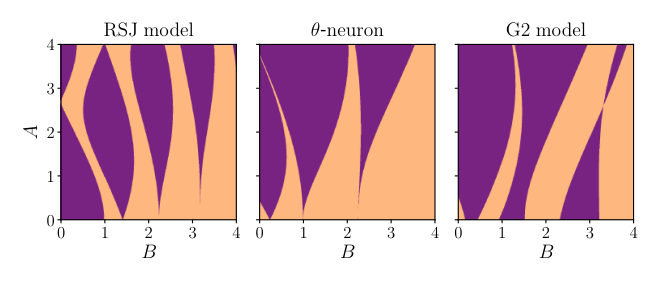
<figcaption class="paper-figure-caption"><b>Fig 1.</b> Figure 1: Bandgap structures of all three models: RSJ model, θ-neuron, and G2 model. Arnold tongues (spectral gaps) are dark, gaps between tongues (spectral bands) are light.</figcaption>
</figure>
<figure class="paper-figure-card">
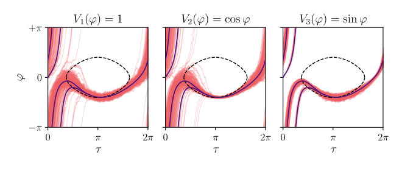
<figcaption class="paper-figure-caption"><b>Fig 2.</b> Figure 2: Influence of three noise channels V1, V2, and V3 on the deterministic dynamics of overdamped Josephson junction (RSJ model) with f(φ, τ) = −cos φ + B + A cos τ, A = 0.5, B = 0.8, ω = 0.2. Dark solid curve corresponds to deterministic trajectory, thin red curves represent stochastic trajectories. The noise intensity is D = 0.01 for each active channel. The dashed black curve represents frozen equilibrium f(φ, τ) = 0.</figcaption>
</figure>
<figure class="paper-figure-card">

<figcaption class="paper-figure-caption"><b>Fig 3.</b> Fig. 2 illustrates how the three noise channels perturb deterministic trajectories. It is clear that equal channel intensities do not necessarily give equal local phase diffusion, since fields Vr depend on the phase differently.</figcaption>
</figure>
<figure class="paper-figure-card">
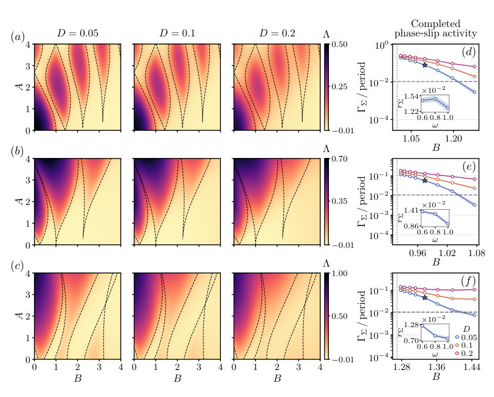
<figcaption class="paper-figure-caption"><b>Fig 4.</b> Figure 3: (a)-(c) Melting tongues for different additive noise intensities for RSJ model, θ- neuron, and G2-model. The color represents top Lyapunov exponent. The black dashed curves show deterministic tongue boundaries; (d)-(f) Total completed-phase slip activity ΓΣ per forcing period along A = 1 cuts through tongues with rotation numbers ℓ= 1, 2, 2 respectively. Circles mark measurements, shaded bands demonstrate 95% confidence intervals. Horizontal dashed line shows tolerance Γtol = −log(1−α)/Nobs ≃1.05×10−2 , with Nobs = 10 and α = 0.1. Insets show the total activity per physical time, rΣ = ωΓΣ/(2π), at D = 0.05, following the same tongue at the fixed fractional position u0 = 0.15...</figcaption>
</figure>
<figure class="paper-figure-card">
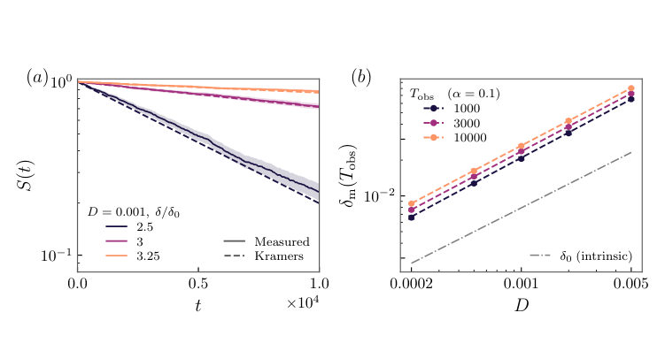
<figcaption class="paper-figure-caption"><b>Fig 5.</b> Figure 4: Adler equation simulations with B = 1. (a) Empirical survival probability for forward threshold crossing S(t) = P(tslip &gt; t) for Adler equation with initial condition φs = arcsin(1−δ) with D = 10−3 for several values δ/δ0. Solid curves show simulation results, dashed curves show the asymptotic Kramers prediction. The first-slip time is defined by the first hit of the 3π/2 phase. Shading indicated 95% intervals; (b) Melting widths δm, defined by P(tslip ≤Tobs) = α with α = 0.1 for several observation times. Circles denote interpolation probability crossing. Dashed curves satisfy r+Tobs = −ln(1 −α) on the activated branch ∆U+/D ≥5. The dash- dotted curve shows the intrinsic rounding...</figcaption>
</figure>
</div>

<p><strong>Summary.</strong> This work analyzes how noise affects phase-locking phenomena in Möbius systems, which model various physical oscillators. By combining WKB theory, large-deviation theory, and FW theory, the authors quantify the stability of phase-locked states and the probability of rare phase slips. This provides a comprehensive theoretical framework for understanding noise tolerance in complex, periodically driven systems.</p>
<p><strong>Why it may be interesting.</strong> The rigorous mathematical tools developed here—combining semiclassical methods with noise theory—are highly relevant for understanding noise-induced transitions and stability in quantum or classical systems exhibiting slow dynamics, such as Josephson junctions or quantum tunneling.</p>
<details>
<summary>Detailed structure</summary>
<p><strong>Main problem.</strong> The paper investigates the fate of phase-locking structures (Arnold tongues) and the existence of canard trajectories in noisy dynamical systems governed by Möbius transformations.</p>
<p><strong>Main result.</strong> It provides quantitative criteria for metastable phase-locking and the melting of Arnold tongues by combining large-deviation theory for fluctuations and weak-noise escape actions for rare phase slips.</p>
<p><strong>Method.</strong> The analysis employs a combination of Wentzel-Kramers-Brillouin (WKB) methods, large-deviation theory, and Freidlin-Wentzell (FW) theory to analyze the system in the slow-fast and weak-noise limits.</p>
<p><strong>Model / system.</strong> The system is a noisy dynamical system on the two-dimensional torus whose phase evolution is governed by Möbius transformations. Examples include the overdamped Josephson junction (RSJ-model) and the $\theta$-neuron.</p>
<p><strong>Key observables.</strong> Poincaré rotation number, Arnold tongues, canard trajectories, finite-time rotation number fluctuations, and phase-slip event rate.</p>
<p><strong>Important parameters / regimes.</strong> Slow-fast limit ($\omega \to 0$), weak noise limit, and observation time.</p>
<p><strong>Assumptions / limitations.</strong> The analysis distinguishes between long-time current large deviations and the weak-noise limit for phase slips, and relies on the Stratonovich prescription for noise.</p>
<p><strong>Figures summary.</strong> Figure 1 illustrates the bandgap structures for three models ($\theta$-neuron, RSJ model, G2 model), showing Arnold tongues (dark) and spectral bands (light).</p>
<p><strong>Paper structure.</strong> The paper builds from the deterministic limit (WKB analysis suggesting band-gap structure) to stochastic fluctuations (large-deviation theory) and finally to rare event dynamics (FW theory) to characterize metastable locking.</p>
</details>
<details>
<summary>Abstract</summary>
<p>We consider a class of noisy dynamical systems on the two-dimensional torus whose phase evolution is governed by Mobius transformations. In the deterministic limit, these systems favor phase-locking that is described by the band-gap structure of an associated Schrodinger equation with a periodic potential. We use the Wentzel-Kramers-Brillouin method to characterize this structure in the slow-fast limit. Then we show that large-deviation theory describes fluctuations of the finite-time rotation number, whereas weak-noise escape actions determine the exponential scale of rare phase slips. These estimates provide quantitative criteria for metastable phase-locking and melting of Arnold tongues over a prescribed observation time. We derive sufficient conditions for stochastic trajectories to follow prescribed canard segments. With controlled entrance errors, exponential amplification of fluctuations along repelling branches leads to an exponentially small sufficient noise scale for canard persistence in the slow-forcing limit.</p>
</details>
<p><sub><a href="#top">↑ back to top</a></sub></p>

<p><a id="paper-2610.26569"></a></p>
<h3 id="phase-diagram-of-the-two-dimensional-vicsek-model"><a href="http://arxiv.org/abs/2610.26569v1">Phase Diagram of the Two-Dimensional Vicsek Model</a></h3>
<p><strong>Authors:</strong> Yu Duan, Hugues Chaté, Benoît Mahault, Xia-qing Shi<br>
<strong>Type:</strong> both · <strong>Category:</strong> statistical mechanics · <strong>PDF:</strong> <a href="https://arxiv.org/pdf/2610.26569v1">https://arxiv.org/pdf/2610.26569v1</a><br>
<strong>Analysis basis:</strong> full PDF text, analyzed in chunks
<strong>Topic relevance:</strong> <code>driven-dissipative phase transition</code> <strong>3/5</strong> · <code>non-equilibrium universality</code> <strong>3/5</strong> · <code>analog quantum simulation</code> <strong>2/5</strong> · <code>methods for driven-dissipative</code> <strong>2/5</strong> · <code>Frenkel-Kontorova</code> <strong>1/5</strong> · <code>Keldysh / 2PI / non-Gaussian methods</code> <strong>1/5</strong> · <code>correlated / nonlocal dissipation</code> <strong>1/5</strong></p>
<div class="figure-strip-hint">↔ Scroll figures horizontally</div>
<div class="paper-figures-scroll">
<figure class="paper-figure-card">
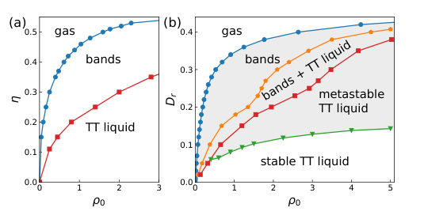
<figcaption class="paper-figure-caption"><b>Fig 1.</b> FIG. 1. Phase diagram of the two-dimensional Vicsek model in the (density, noise strength) plane. (a) current phase di- agram (discrete-time version, v0 = 0.5, data from [23]). (b) new version elaborated from the results obtained here with Eq. (1).</figcaption>
</figure>
<figure class="paper-figure-card">
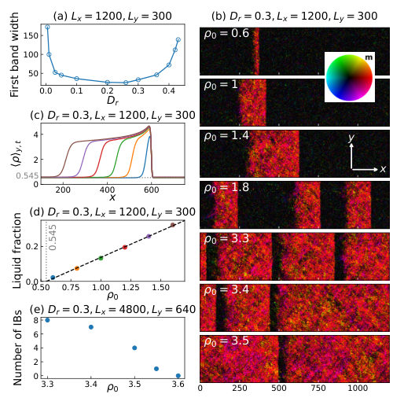
<figcaption class="paper-figure-caption"><b>Fig 2.</b> FIG. 2. Regular band configurations in moderate-size sys- tems. (a) variation with Dr of the width at mid height of the first band nucleating near the gas binodal (protocol de- tailed in the CP [30]). (b) snapshots of the momentum field in steady states obtained by increasing density slowly from ρ0 = 0.6 to 3.5. (c) time- and y-averaged density profiles of the single band at different ρ0 values (color coding of ρ0 given in (d)). (d) width at mid-height of the profiles shown in (c), normalized by Lx: the lever rule is satisfied in this apparent macrophase separation. The vertical dotted line corresponds to the gas binodal determined by the density in the gas. (e) decrease with increasing ρ0...</figcaption>
</figure>
<figure class="paper-figure-card">
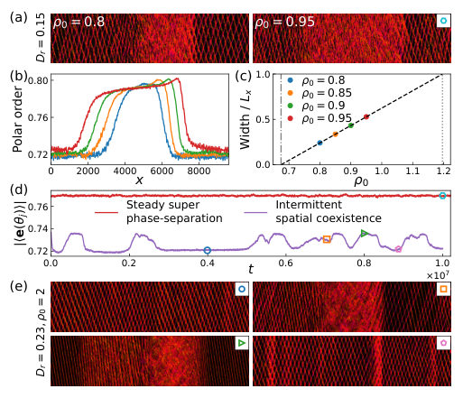
<figcaption class="paper-figure-caption"><b>Fig 3.</b> FIG. 3. Spatial coexistence of TT liquid and bands in large systems (here 9600 × 2400). Steady coexistence at Dr = 0.15 in (a,b,c) and red timeseries in (d), intermittent coexistence at Dr = 0.23 in (e) and purple time series in (d). (a) snapshots of momentum field for two different global densities. (b) pro- files of order averaged over the transverse direction and time ⟨m(r, t) · ex⟩y,t/⟨ρ(r, t)⟩y,t for different ρ0 values indicated in (c). The denser, more ordered, TT liquid domain moves faster than the cross-sea pattern of bands. (c) linear variation with ρ0 of the longitudinal size of the TT liquid domain, measured as the width of the profiles shown in (b). (d) time series of global...</figcaption>
</figure>
<figure class="paper-figure-card">
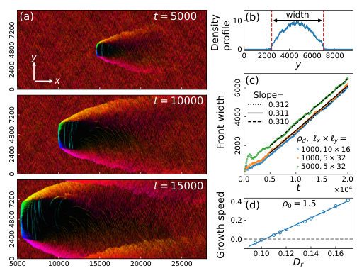
<figcaption class="paper-figure-caption"><b>Fig 4.</b> FIG. 4. Metastability of the Toner-Tu liquid. (a) snapshots of coarse-grained momentum field during the growth of the droplet following the introduction of a group of counter-going particles (Dr = 0.15, ρ0 = 1.2, Lx = 38400, Ly = 9600, col- ormap as in Fig. 2(b)). (b) instantaneous density profile of the growing front for the t = 5000 snapshot in (a), calcu- lated by counting particles with cos θi &lt; 0 (going against the mean +x flow) for each y value. The vertical dashed lines are defined by using a threshold at 10% of the peak height. (c) time series of front width (measured as in (b)) for var- ious initial rectangular perturbations of density ρd (colored symbols) and linear fits (black...</figcaption>
</figure>
<figure class="paper-figure-card">
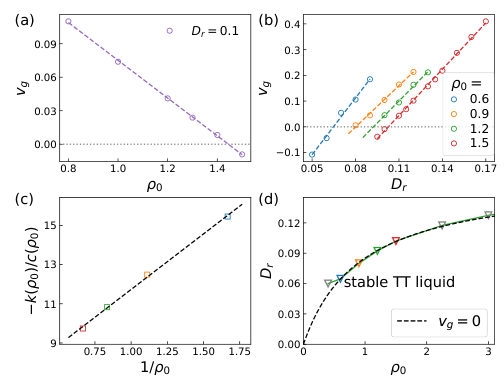
<figcaption class="paper-figure-caption"><b>Fig 5.</b> FIG. 5. Metastability of the Toner-Tu liquid. (a) vg vs ρ0 (Dr = 0.1), measured as in Fig. 4(d). (b) vg(Dr) for various ρ0 values. (c) −k(ρ0)/c(ρ0) vs 1/ρ0 estimated from the data shown in (b). In (a-c), dashed lines are linear fits. (d) the vg = 0 dashed line given by Eq.(3), and metastability limits estimated numerically (symbols, same data as green line in Fig. 1(b)).</figcaption>
</figure>
</div>

<p><strong>Summary.</strong> This work provides a major revision of the phase diagram for the 2D Vicsek model, revealing complex phase separation regimes beyond simple predictions. By combining large-scale simulations with phenomenological theory, the authors successfully map out the metastability limit of the ordered liquid phase, highlighting the limitations of simple continuum theories in describing active matter dynamics.</p>
<p><strong>Why it may be interesting.</strong> The study of Vicsek-type models provides a crucial non-equilibrium platform for studying collective dynamics, phase transitions, and pattern formation, which shares conceptual links with driven-dissipative quantum systems and active matter physics.</p>
<details>
<summary>Detailed structure</summary>
<p><strong>Main problem.</strong> The paper updates the complex phase diagram of the two-dimensional Vicsek model and precisely maps the metastability limit of the ordered Toner-Tu liquid phase.</p>
<p><strong>Main result.</strong> The phase diagram is more complex than previously thought, featuring multiple phase separation scenarios and a distinct metastability limit for the ordered liquid phase, which is derived both numerically and phenomenologically.</p>
<p><strong>Method.</strong> The authors combine extensive numerical simulations on large domains with the development and fitting of a phenomenological theory to analyze the growth speed of domain boundaries.</p>
<p><strong>Model / system.</strong> The system is the Vicsek model, a minimal model for collective motion of self-propelled particles whose alignment is governed by local interactions and rotational noise. The dynamics are described by continuous-time equations for particle positions and orientations.</p>
<p><strong>Key observables.</strong> Phase diagram mapping, momentum field $\mathbf{m}(\mathbf{r})$, liquid fraction, band width, and the growth speed ($v_g$) of droplet fronts.</p>
<p><strong>Important parameters / regimes.</strong> Global density ($
ho_0$) and rotational noise strength ($D_r$).</p>
<p><strong>Assumptions / limitations.</strong> The analysis relies on comparing numerical results to a phenomenological theory derived for the growth speed, which is assumed to be valid except in regimes of strong fluctuations at low densities.</p>
<p><strong>Figures summary.</strong> Figures illustrate the updated phase diagram in the $(	ext{density}, 	ext{noise strength})$ plane, showing multiple coexistence regions. Other figures detail the dynamics of domain growth, the linear dependence of the growth speed on noise, and the resulting metastability boundary.</p>
<p><strong>Paper structure.</strong> The paper progresses by first presenting the comprehensive numerical mapping of the phase diagram, then focusing on the complex coexistence region, and finally deriving and testing a phenomenological theory to pinpoint the metastability limit of the ordered liquid phase.</p>
</details>
<details>
<summary>Abstract</summary>
<p>Motivated by gaps in our current knowledge of the Vicsek model, we present a major update of its phase diagram in two space dimensions, summarizing comprehensive numerical simulations at length- and timescales never explored before. Our main conclusions are that multiple phase separation scenarios are at play, not just the simple microphase separation put forward in [Phys. Rev. Lett. 114, 068101 (2015)], and that the coexistence phase is subdivided in two. We also map out the region of metastability of the homogeneous Toner-Tu liquid phase.</p>
</details>
<p><sub><a href="#top">↑ back to top</a></sub></p>

<p><a id="paper-2610.26753"></a></p>
<h3 id="a-general-master-equation-for-two-accelerated-detectors-stationary-states-and-entanglement"><a href="http://arxiv.org/abs/2610.26753v1">A General Master Equation for Two Accelerated Detectors: Stationary States and Entanglement</a></h3>
<p><strong>Authors:</strong> Riccardo Acquaviva, Paolo Facchi<br>
<strong>Type:</strong> theory · <strong>Category:</strong> other · <strong>PDF:</strong> <a href="https://arxiv.org/pdf/2610.26753v1">https://arxiv.org/pdf/2610.26753v1</a><br>
<strong>Analysis basis:</strong> full PDF text, analyzed in chunks
<strong>Topic relevance:</strong> <code>correlated / nonlocal dissipation</code> <strong>3/5</strong> · <code>Keldysh / 2PI / non-Gaussian methods</code> <strong>2/5</strong> · <code>driven-dissipative phase transition</code> <strong>2/5</strong> · <code>methods for driven-dissipative</code> <strong>2/5</strong> · <code>quantum measurements</code> <strong>2/5</strong> · <code>non-equilibrium universality</code> <strong>1/5</strong></p>
<div class="figure-strip-hint">↔ Scroll figures horizontally</div>
<div class="paper-figures-scroll">
<figure class="paper-figure-card">
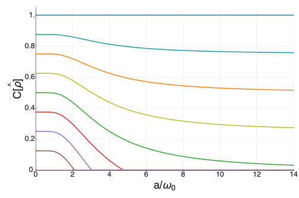
<figcaption class="paper-figure-caption"><b>Fig 1.</b> FIG. 1. Asymptotic concurrence C[ˆρ] as a function of a/ω0 for different values of ξ and for the symmetric cou- pling tensor. From top to bottom, the curves correspond to ξ = −3, −2.5, −2, −1.5, −1, −0.5, 0, 0.5, 1. The concurrence is non-increasing with acceleration and vanishes above a finite critical acceleration for −1 &lt; ξ &lt; 1. At small accelerations, the curves approach their inertial limiting values, with expo- nentially small deviations.</figcaption>
</figure>
<figure class="paper-figure-card">

<figcaption class="paper-figure-caption"><b>Fig 2.</b> FIG. 2. Concurrence C[ˆρ] as a function of a/ω0 and ξ for the symmetric coupling tensor. The curves correspond to the values of ξ shown in Fig.1.</figcaption>
</figure>
</div>

<p><strong>Summary.</strong> This paper develops a general master equation for two accelerated quantum detectors interacting with a quantum field bath. By employing the weak-coupling limit, they derive the dynamics in the GKLS form, allowing for the calculation of key observables like entanglement. The results highlight how detector coupling geometry dictates whether entanglement depends on the acceleration experienced by the detectors.</p>
<p><strong>Why it may be interesting.</strong> This work provides a rigorous, general framework for analyzing open quantum systems involving relativistic motion (acceleration), which is crucial for understanding quantum measurements in curved or accelerating spacetimes.</p>
<details>
<summary>Detailed structure</summary>
<p><strong>Main problem.</strong> The paper derives a general master equation describing the dynamics of two uniformly accelerated two-level detectors coupled to a quantum scalar field bath.</p>
<p><strong>Main result.</strong> It finds that for specific coupling types and massless fields in 4D, the entanglement between the detectors can be either acceleration-dependent or independent of acceleration.</p>
<p><strong>Method.</strong> The dynamics are derived using the Nakajima-Zwanzig projection-operator formalism, which is then approximated in the weak-coupling limit to yield a Markovian Gorini-Kossakowski-Lindblad-Sudarshan (GKLS) master equation.</p>
<p><strong>Model / system.</strong> The system consists of two two-level detectors following accelerated worldlines in Minkowski spacetime, coupled to a bath of free scalar bosonic fields. The dynamics are governed by a total Hamiltonian $H = H_S + H_B + \lambda H'$.</p>
<p><strong>Key observables.</strong> Stationary states, entanglement (quantified by concurrence), and transition rates.</p>
<p><strong>Important parameters / regimes.</strong> Acceleration, field mass, coupling strength ($\lambda$), and spacetime dimension.</p>
<p><strong>Assumptions / limitations.</strong> The detectors are weakly coupled to the environment, and the analysis assumes the initial state is factorized.</p>
<p><strong>Figures summary.</strong> Not specified.</p>
<p><strong>Paper structure.</strong> The paper moves from deriving the general integro-differential equation for the reduced density matrix to approximating it in the weak-coupling limit, resulting in the GKLS form, and finally applying this formalism to calculate entanglement in specific physical scenarios.</p>
</details>
<details>
<summary>Abstract</summary>
<p>We derive a general Gorini-Kossakowski-Lindblad-Sudarshan master equation for two co-located, uniformly accelerated two-level detectors weakly coupled to scalar fields in the Minkowski vacuum, retaining coherent and dissipative contributions for arbitrary orientations, field masses, and spacetime dimensions. For equal orientations, we determine stationary states and their entanglement for two couplings to massless fields in four dimensions: symmetric coupling yields acceleration-dependent concurrence, whereas rotating-wave coupling gives acceleration-independent concurrence.</p>
</details>
<p><sub><a href="#top">↑ back to top</a></sub></p>

<p><a id="paper-2610.26561"></a></p>
<h3 id="coexistence-phase-of-the-two-dimensional-vicsek-model"><a href="http://arxiv.org/abs/2610.26561v1">Coexistence phase of the two-dimensional Vicsek model</a></h3>
<p><strong>Authors:</strong> Yu Duan, Hugues Chaté, Benoît Mahault, Xia-qing Shi<br>
<strong>Type:</strong> theory · <strong>Category:</strong> statistical mechanics · <strong>PDF:</strong> <a href="https://arxiv.org/pdf/2610.26561v1">https://arxiv.org/pdf/2610.26561v1</a><br>
<strong>Analysis basis:</strong> full PDF text, analyzed in chunks
<strong>Topic relevance:</strong> <code>driven-dissipative phase transition</code> <strong>3/5</strong> · <code>non-equilibrium universality</code> <strong>3/5</strong> · <code>analog quantum simulation</code> <strong>2/5</strong> · <code>Frenkel-Kontorova</code> <strong>1/5</strong> · <code>Keldysh / 2PI / non-Gaussian methods</code> <strong>1/5</strong> · <code>methods for driven-dissipative</code> <strong>1/5</strong></p>
<div class="figure-strip-hint">↔ Scroll figures horizontally</div>
<div class="paper-figures-scroll">
<figure class="paper-figure-card">
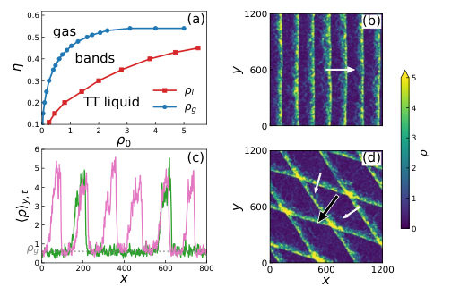
<figcaption class="paper-figure-caption"><b>Fig 1.</b> FIG. 1. Current knowledge about the coexistence phase of the Vicsek model. (Data taken from [18] for (a,c).) Results from the discrete-time model (3) with v0 = 0.5. (a) phase diagram in the (global density, noise strength) parameter plane. (b) typical coarse-grained density field of a smectic arrangement of bands (Lx = Ly = 1200, η = 0.32, ρ0 = 1, coarse-grained over boxes of linear size 2, the white arrow indicates the direc- tion along which bands travel). (c) superposition of instan- taneous density profiles (averaged over the transverse direc- tion) in smectic configurations at two different global densities (bands traveling from left to right, η = 0.4, ρ0 = 1.05 (green line) and ρ0 =...</figcaption>
</figure>
<figure class="paper-figure-card">
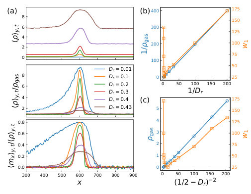
<figcaption class="paper-figure-caption"><b>Fig 2.</b> FIG. 2. Scaling of the gas binodal and the first band emerg- ing near it in the vanishing noise and infinite density limits. The band is moving along the +x direction (results obtained with the continuous-time VM (2) with v0 = 1, Lx = 1200, Ly = 300). (a) part of time- and y-averaged profiles at vari- ous noise strengths (density, density relative to the gas den- sity, and polar order in, respectively, the top, middle, and bottom panels). (b) 1/ρgas (blue data, left y-axis) and w1 (orange data, right y-axis) vs 1/Dr revealing the scaling of these quantities in the zero-density zero noise limit. (c) ρgas (blue data, left y-axis) and w1 (orange data, right y-axis) vs ( 1</figcaption>
</figure>
<figure class="paper-figure-card">
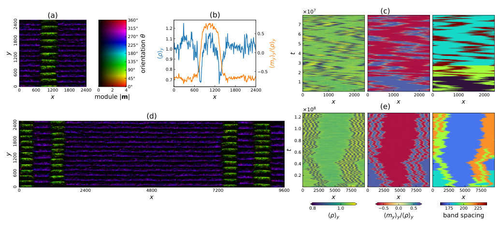
<figcaption class="paper-figure-caption"><b>Fig 3.</b> FIG. 3. Counter-going band lanes. Results obtained with the discrete-time model (3) with v0 = 0.5, ρ0 = 1, η = 0.29. (a) momentum field m(r) = P</figcaption>
</figure>
<figure class="paper-figure-card">
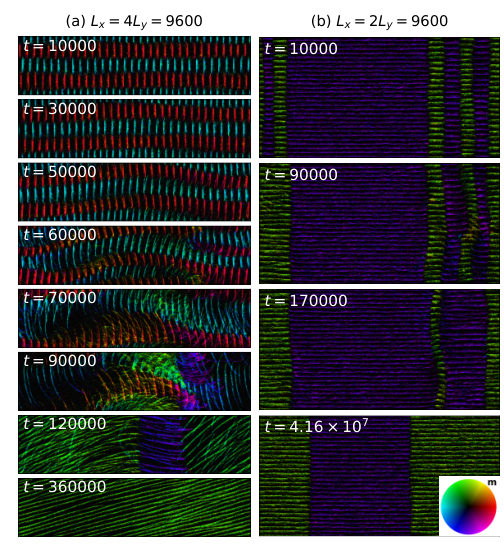
<figcaption class="paper-figure-caption"><b>Fig 4.</b> FIG. 4. Instability of long lanes (discrete-time VM with v0 = 0.5). Momentum field shown at various times (time running downward) (a) η = 0.35, ρ0 = 1.264. (b) η = 0.29, ρ0 = 1.</figcaption>
</figure>
<figure class="paper-figure-card">
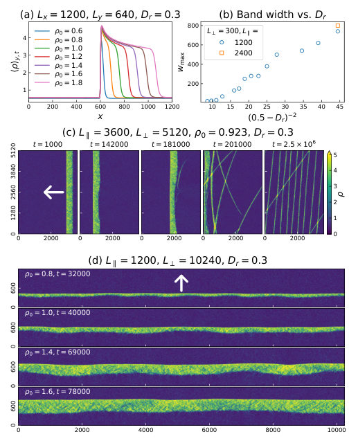
<figcaption class="paper-figure-caption"><b>Fig 5.</b> FIG. 5. Fat bands. Results obtained with the continuous- time model (2) with v0 = 1. (a) superimposed time-averaged density profiles of stable fat bands obtained at various global densities. Bands are traveling to the left. (b) maximum width wmax of single fat bands vs Dr (obtained by increasing pro- gressively ρ0 until the band splits within the typical time win- dow ∆t ∼106); wmax estimated from the width at mid height of density profiles such as those in (a). (c) density fields at selected times showing the progressive destruction of a long fat band (ρ0 = 0.923). The initial condition was created by duplicating a narrow , stable, single fat band traveling to the left (Lx = 3600, Ly =...</figcaption>
</figure>
</div>

<p><strong>Summary.</strong> This work explores the complex phase coexistence of the 2D Vicsek model, revealing numerous previously unseen band patterns. The key finding is that these ordered patterns are unstable in the infinite limit, suggesting the coexistence phase is fundamentally metastable and approaches a disordered state. The research uses detailed simulations and theoretical comparisons to map out the system's non-equilibrium phase boundaries.</p>
<p><strong>Why it may be interesting.</strong> While focused on classical active matter, the study of metastability, phase coexistence, and the failure of simple continuum theories (like TT) to capture complex, emergent patterns provides rich analogies for understanding non-equilibrium dynamics in quantum many-body systems.</p>
<details>
<summary>Detailed structure</summary>
<p><strong>Main problem.</strong> The study investigates the diversity and asymptotic stability of band patterns observed in the coexistence phase of the two-dimensional Vicsek model.</p>
<p><strong>Main result.</strong> The coexistence phase is found to be at least partially metastable, suggesting that in the infinite-size limit, it must transition into a disordered phase composed of chaotically interacting traveling bands.</p>
<p><strong>Method.</strong> The authors use numerical simulations for both continuous-time and discrete-time versions of the Vicsek model, comparing results to continuum theories like the Toner-Tu equations.</p>
<p><strong>Model / system.</strong> The system is the Vicsek model, a fundamental model for active matter, which exhibits distinct phases including a ferromagnetic flocking phase, a disordered paramagnetic phase, and a complex coexistence phase characterized by various band patterns.</p>
<p><strong>Key observables.</strong> Global density, polar order, density profiles of traveling bands, and scaling laws near binodal lines.</p>
<p><strong>Important parameters / regimes.</strong> Noise strength ($\eta$ or $D_r$), particle speed ($v_0$), and particle density ($
ho_0$).</p>
<p><strong>Assumptions / limitations.</strong> The analysis relies on comparing discrete simulations to continuum theories (like TT) and analyzing the system's behavior in specific limits (e.g., vanishing noise, infinite size).</p>
<p><strong>Figures summary.</strong> Figures illustrate the phase diagram, typical smectic band arrangements, scaling of band widths near binodals, and evidence of structural instabilities like lane buckling.</p>
<p><strong>Paper structure.</strong> The paper systematically analyzes the phase diagram, details the observed band configurations (smectic, counter-going, fat/inverse), compares these findings to established continuum theories (Toner-Tu), and discusses the implications for the system's long-term stability.</p>
</details>
<details>
<summary>Abstract</summary>
<p>The Vicsek model continues to be central in statistical physics studies of active matter, with major recent surprises such as the partial metastability of the famous Toner-Tu flocking phase. Here we report on the diversity of band patterns observed in its coexistence phase --some of them never observed before--, but we also argue that most disappear in the infinite-size limit, leaving nevertheless a different picture than anticipated previously. We finally show that these rather regular, globally ordered band configurations can be destroyed by a localized perturbation: the coexistence phase is also at least partially metastable, and thus must be, asymptotically, a disordered phase made of a variety of chaotically interacting traveling bands.</p>
</details>
<p><sub><a href="#top">↑ back to top</a></sub></p>

<p><a id="paper-2610.26593"></a></p>
<h3 id="from-particles-to-continuum-theories-in-effective-models-of-self-propelled-rods"><a href="http://arxiv.org/abs/2610.26593v1">From particles to continuum theories in effective models of self-propelled rods</a></h3>
<p><strong>Authors:</strong> Elia Bronzo, Hugues Chaté, Benoît Mahault, Alexandre Solon<br>
<strong>Type:</strong> theory · <strong>Category:</strong> statistical mechanics · <strong>PDF:</strong> <a href="https://arxiv.org/pdf/2610.26593v1">https://arxiv.org/pdf/2610.26593v1</a><br>
<strong>Analysis basis:</strong> full PDF text, analyzed in chunks
<strong>Topic relevance:</strong> <code>driven-dissipative phase transition</code> <strong>3/5</strong> · <code>non-equilibrium universality</code> <strong>3/5</strong> · <code>Keldysh / 2PI / non-Gaussian methods</code> <strong>2/5</strong> · <code>methods for driven-dissipative</code> <strong>2/5</strong> · <code>Frenkel-Kontorova</code> <strong>1/5</strong></p>
<div class="figure-strip-hint">↔ Scroll figures horizontally</div>
<div class="paper-figures-scroll">
<figure class="paper-figure-card">
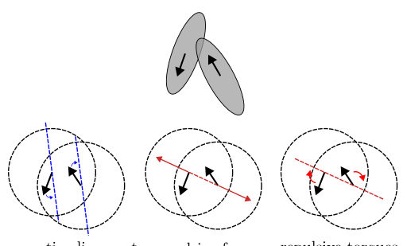
<figcaption class="paper-figure-caption"><b>Fig 1.</b> FIG. 1. Schematic of the interactions considered. The inter- action of two self-propelled rods is approximated as a nematic alignment (our bare model) combined with repulsive forces or repulsive torques, all acting within a circular region of inter- action.</figcaption>
</figure>
<figure class="paper-figure-card">
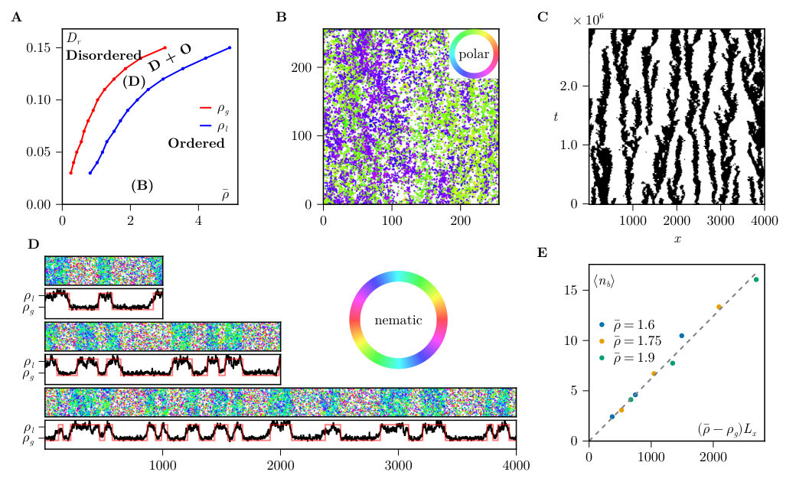
<figcaption class="paper-figure-caption"><b>Fig 2.</b> FIG. 2. Bare microscopic model. A: Binodal lines measured in a system of size 2562 using the procedure detailed in App. A. The symbols (B) and (D) indicate the position of the snapshots in panel B and D. B: Snapshot in the ordered phase at ¯ρ = 2, Dr = 0.01 with particles colored by polar orientation. C: Space-time evolution of coexistence phase for system of size 4000×250, black regions are bands while white are regions of disordered gas. Bands are detected from the density profiles averaged along the short direction. D: Snapshots in the phase coexistence region for ¯ρ = 1.75, Dr = 0.11 for system size Lx = 1000, 2000, 4000, Ly = 250, particles colored by nematic orientation. Below the...</figcaption>
</figure>
<figure class="paper-figure-card">
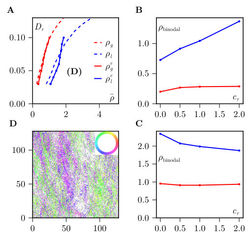
<figcaption class="paper-figure-caption"><b>Fig 3.</b> FIG. 3. Microscopic model with repulsive forces. A: Bin- odal densities with cr = 1 (plain lines) compared to the bare model cr = 0 (dashed lines) (see App. A for details on the measurement). System size 2562. The (D) symbol indicates the position of the snapshot shown in panel D. B-C: Varia- tion of the binodal densities with repulsion strength at low noise Dr = 0.03 (B) and higher noise Dr = 0.1 (C). System size 10242. D: Snapshot in the homogeneous ordered phase at cr = 1, ¯ρ = 2.5 and Dr = 0.05.</figcaption>
</figure>
<figure class="paper-figure-card">
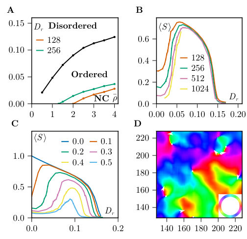
<figcaption class="paper-figure-caption"><b>Fig 4.</b> FIG. 4. Microscopic model with repulsive torques. A: Phase diagram for β = 0.2. The two transition lines (order/disorder and order/nematic chaos) are defined as the point where ⟨S⟩= 1/2 and depend strongly on system size only for the second transition. B: Order parameter for different system sizes. β = 0.2, ¯ρ = 4. C: Order parameter for different values of β. For β ≳0.4, the ordered phase completely disappears. ¯ρ = 4, L = 256. D. Snapshot of the nematic angle of the coarse-grained field in the nematic chaos phase. β = 0.2, ¯ρ = 4, Dr = 0.02 and system size 10242</figcaption>
</figure>
<figure class="paper-figure-card">
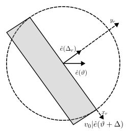
<figcaption class="paper-figure-caption"><b>Fig 5.</b> FIG. 5. The grey area is the region containing the particles colliding in time-step dt and thus the area where the collision kernel is nonzero. It reduces to a line in the limit dt →0.</figcaption>
</figure>
</div>

<p><strong>Summary.</strong> This work tackles the difficult problem of creating continuum theories for self-propelled rods by using Vicsek-style particle models. The authors successfully derive hydrodynamic equations that map the complex phase behavior—including ordered, coexistence, and chaotic regimes—observed in simulations. This provides a powerful theoretical tool for analyzing active matter systems beyond simple mean-field approximations.</p>
<p><strong>Why it may be interesting.</strong> The rigorous attempt to bridge particle-level active matter dynamics with continuum field theories is highly relevant to understanding non-equilibrium phase transitions in complex active systems, a field adjacent to many-body dynamics.</p>
<details>
<summary>Detailed structure</summary>
<p><strong>Main problem.</strong> The primary challenge is developing continuum theories that accurately describe the collective behavior of self-propelled rods, as direct coarse-graining of their explicit geometry is notoriously difficult.</p>
<p><strong>Main result.</strong> The authors derived hydrodynamic equations (BGL approach) that qualitatively reproduce the phase diagrams observed in particle-level simulations, identifying distinct regimes like ordered, coexistence, and nematic chaos.</p>
<p><strong>Method.</strong> The study combines microscopic simulations (Vicsek-style models) with theoretical derivations using the Boltzmann-Ginzburg-Landau (BGL) approach to derive continuum equations for slow modes.</p>
<p><strong>Model / system.</strong> The system consists of self-propelled rods, analogous to gliding bacteria, whose dynamics are modeled using Vicsek-style rules incorporating nematic alignment and various repulsive interactions (forces and torques).</p>
<p><strong>Key observables.</strong> Nematic order parameter ($S$), polar order parameter ($P$), density profiles, and the identification of slow modes ($c$ and $Q_\perp$).</p>
<p><strong>Important parameters / regimes.</strong> Mean density ($ar{
ho}$), rotational noise strength ($D_r$), and the nature/strength of repulsive interactions.</p>
<p><strong>Assumptions / limitations.</strong> The derivation of continuum theories relies on the Boltzmann-Ginzburg-Landau approach and assumes that the system can be reduced to a few slow modes under certain stability conditions.</p>
<p><strong>Figures summary.</strong> Figures illustrate the phase diagram showing transitions between disordered, ordered, and coexistence phases; snapshots show microphase separation into nematic bands; and later figures detail the mathematical coefficients and slow mode equations.</p>
<p><strong>Paper structure.</strong> The paper progresses from establishing the microscopic particle model and its phase diagram, to deriving the continuum description via the Boltzmann equation, and finally performing a linear stability analysis to reduce the system to equations governing the slow collective modes.</p>
</details>
<details>
<summary>Abstract</summary>
<p>Models of colliding self-propelled rods are abstractions of many real systems such as gliding bacteria and biofilaments displaced by molecular motors. They have been studied mostly in two space dimensions and shown to display a wealth of different collective regimes with many parameters involved in the ensuing phase diagrams. Continuum-level theories faithful to this phenomenology are largely lacking since coarse-graining models of explicit rods is notoriously difficult. Here we study collections of particles in which the rods geometry is taken into account effectively, by implementing the nematic alignment of their velocities and two types of repulsion. These Vicsek-style models are simple enough to be starting points for systematic coarse-graining. We thus derive hydrodynamic equations that we show to have solutions qualitatively faithful to their particle-level origin.</p>
</details>
<p><sub><a href="#top">↑ back to top</a></sub></p>

<p><a id="paper-2610.26356"></a></p>
<h3 id="origins-of-faceted-anomalous-scaling"><a href="http://arxiv.org/abs/2610.26356v1">Origins of Faceted Anomalous Scaling</a></h3>
<p><strong>Authors:</strong> Maximilien Bernard, José Luis Iguain, Alejandro Kolton, Alberto Rosso<br>
<strong>Type:</strong> theory · <strong>Category:</strong> statistical mechanics · <strong>PDF:</strong> <a href="https://arxiv.org/pdf/2610.26356v1">https://arxiv.org/pdf/2610.26356v1</a><br>
<strong>Analysis basis:</strong> full PDF text, analyzed in chunks
<strong>Topic relevance:</strong> <code>non-equilibrium universality</code> <strong>3/5</strong> · <code>Keldysh / 2PI / non-Gaussian methods</code> <strong>2/5</strong> · <code>methods for driven-dissipative</code> <strong>2/5</strong> · <code>Frenkel-Kontorova</code> <strong>1/5</strong> · <code>analog quantum simulation</code> <strong>1/5</strong> · <code>correlated / nonlocal dissipation</code> <strong>1/5</strong> · <code>driven-dissipative phase transition</code> <strong>1/5</strong></p>
<div class="figure-strip-hint">↔ Scroll figures horizontally</div>
<div class="paper-figures-scroll">
<figure class="paper-figure-card">
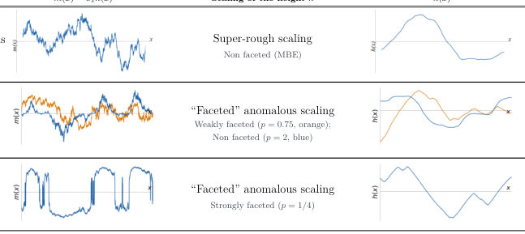
<figcaption class="paper-figure-caption"><b>Fig 1.</b> FIG. 1. Phenomenological slope-field classification of stationary one-dimensional rough interfaces with αloc = 1 and αs &gt; 1, according to the contribution controlling the second moment of slope increments. Here ∆ℓ= m(x + ℓ) −m(x), and Eq. (7) decomposes ⟨|∆ℓ|2⟩into typical and rare contributions, the latter weighted by the probability Pr(ℓ, L) of sampling a large rare increment. Standard L-independent typical fluctuations yield a super-rough, nonfaceted height field (top). “Faceted” anomalous scaling has two origins, illustrated by the anharmonic Larkin model: dominant anomalous typical fluctuations produce weakly faceted (1/2 &lt; p &lt; 1) or nonfaceted (p &gt; 1) morphologies (middle), whereas...</figcaption>
</figure>
<figure class="paper-figure-card">
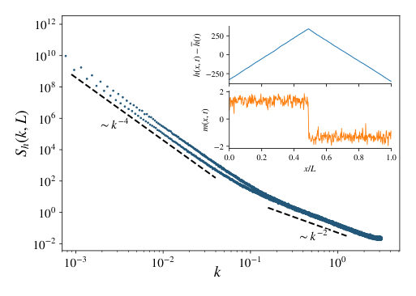
<figcaption class="paper-figure-caption"><b>Fig 2.</b> FIG. 2. Stationary height structure factor Sh(k, L) of the one-dimensional columnar KPZ equation for L = 214, aver- aged over 360 disorder realizations, with free boundary con- ditions. The dashed segments indicate the k−4 behavior at small k, generated by the macroscopic slope jump, and the k−2 behavior at larger k, associated with the short-scale fluc- tuations χ(x) of the localized state. Insets: centered height profile h(x, t) −h(t) (upper) and corresponding slope pro- file m(x, t) = ∂xh(x, t) (lower) for a representative stationary configuration. The two finite slope plateaus separated by a macroscopic jump produce the faceted height profile. The structure factor is computed with the...</figcaption>
</figure>
<figure class="paper-figure-card">
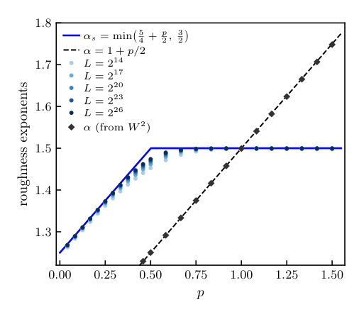
<figcaption class="paper-figure-caption"><b>Fig 3.</b> FIG. 3. Global and spectral roughness exponents of the gen- eralized stationary slope process as a function of p. Blue circles show αs extracted from the height structure factor, for system sizes L = 214 (lightest) to L = 226 (darkest); the spread near p = 1</figcaption>
</figure>
<figure class="paper-figure-card">
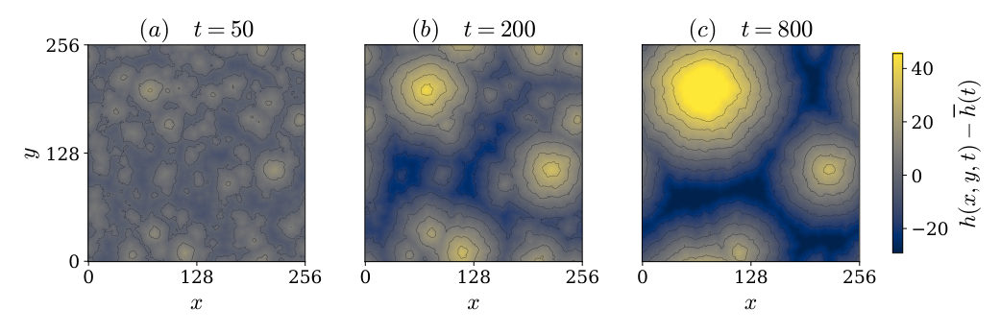
<figcaption class="paper-figure-caption"><b>Fig 4.</b> FIG. 4. Time evolution of a two-dimensional columnar-KPZ interface with columnar disorder for L = 256. The centered height h(x, t) −h(t) is shown at three times. Several localized structures compete initially, while a single structure dominates at late times.</figcaption>
</figure>
<figure class="paper-figure-card">
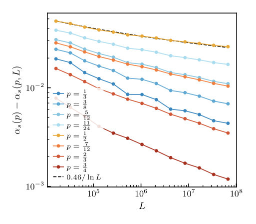
<figcaption class="paper-figure-caption"><b>Fig 5.</b> FIG. 6. Finite-size convergence of αs near the crossover p = 1</figcaption>
</figure>
</div>

<p><strong>Summary.</strong> This work provides a rigorous statistical mechanical framework to understand 'faceted anomalous scaling' in fluctuating interfaces by analyzing the statistics of the slope field. It shows that the scaling exponents are determined by the competition between typical fluctuations and rare, large jumps in the slope increments. The analysis uses the Larkin and KPZ models to derive exact exponents, clarifying the physical conditions required for faceted versus non-faceted interface behavior.</p>
<p><strong>Why it may be interesting.</strong> The detailed mathematical framework connecting interface morphology (faceting) directly to the underlying statistical properties of the slope field is highly relevant to understanding non-equilibrium dynamics in complex systems, which shares mathematical structures with quantum many-body localization problems.</p>
<details>
<summary>Detailed structure</summary>
<p><strong>Main problem.</strong> The paper investigates the statistical origin of 'faceted anomalous scaling' in fluctuating interfaces, characterized by specific roughness exponents ($\alpha_s &gt; 1, \alpha_s 
eq \alpha, \alpha_{ ext{loc}} = 1$). It seeks to determine whether this scaling is due to typical fluctuations or rare, large jumps in the slope field.</p>
<p><strong>Main result.</strong> The anomalous scaling arises from the competition between typical and rare slope increments, which can be analytically derived in the generalized anharmonic Larkin model and the columnar KPZ equation. The columnar KPZ model, representing the rare-jump dominated case, yields specific exponents like $(\alpha, \alpha_s, \alpha_{	ext{loc}}) = (1, 3/2, 1)$.</p>
<p><strong>Method.</strong> The analysis involves decomposing the second moment of slope increments into typical and rare contributions, employing techniques like Brownian mapping, and analyzing the scaling behavior of the structure factor $S_h(k, L)$.</p>
<p><strong>Model / system.</strong> The study focuses on fluctuating interfaces modeled by the generalized anharmonic Larkin model and the columnar Kardar–Parisi–Zhang (KPZ) equation. These models describe the evolution of the interface height $h(x, t)$ under the influence of noise and non-linear slope terms.</p>
<p><strong>Key observables.</strong> Global ($\alpha$), spectral ($\alpha_s$), and local ($\alpha_{	ext{loc}}$) roughness exponents; the structure factor $S_h(k, L)$; and the density of slope flips $
ho_{    ext{flip}}(t, L)$.</p>
<p><strong>Important parameters / regimes.</strong> The exponent $p$ governing the slope field statistics, which dictates the dominance of typical versus rare fluctuations; and the system size $L$ and time $t$.</p>
<p><strong>Assumptions / limitations.</strong> The analysis relies on decomposing the second moment of slope increments into typical and rare contributions, and uses approximations like linearizing the exact expression for slope increments in the Larkin model.</p>
<p><strong>Figures summary.</strong> Figures illustrate the classification of scaling regimes based on slope field statistics, show the structure factor decay for columnar KPZ (exhibiting $k^{-4}$ and $k^{-2}$ decays), and track the time evolution of localized structures and the decay of slope flips.</p>
<p><strong>Paper structure.</strong> The paper first defines the problem via roughness exponents, then analyzes the slope field statistics by splitting increments into typical and rare parts. It establishes the framework analytically using the Larkin model and the columnar KPZ equation, deriving specific exponent values for different physical limits.</p>
</details>
<details>
<summary>Abstract</summary>
<p>Fluctuating interfaces are typically characterized by their global, spectral, and local roughness exponents. Faceted anomalous scaling, characterized by $α_s>1$, $α_s\neqα$, and $α_{\mathrm{loc}}=1$, owes its name to the tendency of such interfaces to develop long, nearly linear segments called facets. Its statistical origin, and whether facets are required, have remained unclear. We show that this exponent structure is determined by the spatial statistics of the slope field. Slope increments split into typical fluctuations and rare, larger jumps. This anomalous scaling arises either when the typical slope increment displays genuine system-size-dependent anomalous scaling or when the rare jumps dominate the second moment. The two contributions can coexist, and their competition leads to bifractal scaling of the slopes. We establish this framework analytically in the generalized anharmonic Larkin model and the columnar Kardar--Parisi--Zhang equation, and we derive exactly the global, spectral, and local roughness exponents in both cases. The Larkin model realizes both mechanisms and produces anomalous interfaces with or without facets, whereas columnar KPZ belongs to the jump-dominated case and yields $α_s=3/2$.</p>
</details>
<p><sub><a href="#top">↑ back to top</a></sub></p>

<p><a id="paper-2610.24457"></a></p>
<h3 id="quantum-correlation-based-multi-emitter-localization-in-information-limited-regimes-via-learned-inference"><a href="http://arxiv.org/abs/2610.24457v1">Quantum-Correlation-Based Multi-Emitter Localization in Information-Limited Regimes via Learned Inference</a></h3>
<p><strong>Authors:</strong> Sanket K. Tripathy, Simeon I. Bogdanov<br>
<strong>Type:</strong> both · <strong>Category:</strong> disordered systems and neural networks · <strong>PDF:</strong> <a href="https://arxiv.org/pdf/2610.24457v1">https://arxiv.org/pdf/2610.24457v1</a><br>
<strong>Analysis basis:</strong> full PDF text, analyzed in chunks
<strong>Topic relevance:</strong> <code>quantum measurements</code> <strong>3/5</strong> · <code>quantum optics experiment</code> <strong>3/5</strong> · <code>interference shaping light</code> <strong>2/5</strong> · <code>methods for driven-dissipative</code> <strong>2/5</strong> · <code>Full counting statistics</code> <strong>1/5</strong></p>
<div class="figure-strip-hint">↔ Scroll figures horizontally</div>
<div class="paper-figures-scroll">
<figure class="paper-figure-card">
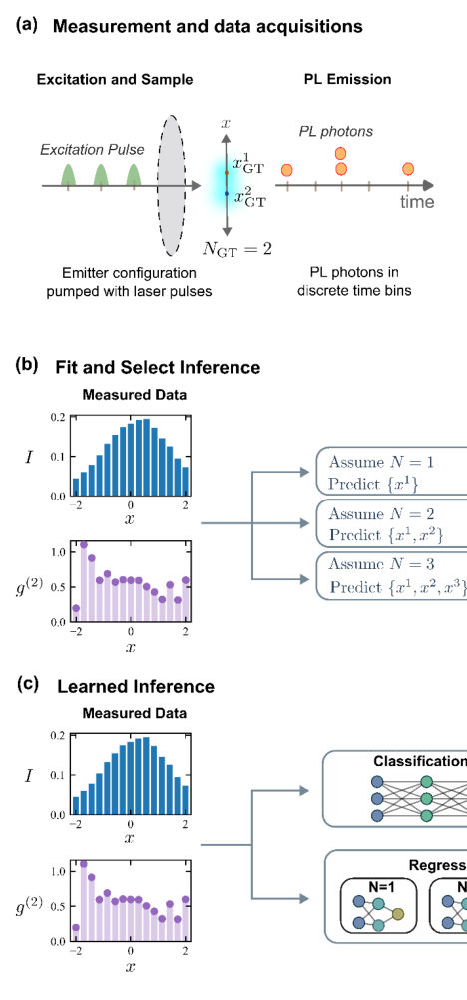
<figcaption class="paper-figure-caption"><b>Fig 1.</b> Figure 1. Overview of the localization framework.</figcaption>
</figure>
<figure class="paper-figure-card">
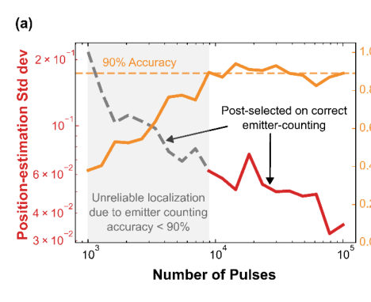
<figcaption class="paper-figure-caption"><b>Fig 2.</b> Figure 2. The limitations of the fit-and-select approach.</figcaption>
</figure>
<figure class="paper-figure-card">
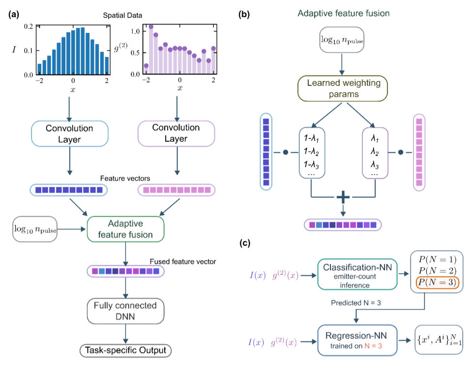
<figcaption class="paper-figure-caption"><b>Fig 3.</b> Figure 3. Architecture and learned inference pipeline of the proposed localization framework. (a) General architecture shared by the classification and regression models. The measured intensity, I(x), and second- order correlation, g(2)(x), are processed by separate convolutional feature-extraction branches. The resulting feature vectors are combined by an adaptive feature-fusion layer using photon-budget-dependent weighting and subsequently passed to a fully connected task-specific network. (b) Schematic of the adaptive feature- fusion operation, in which feature vectors from the intensity and autocorrelation branches are weighted independently and combined to form a fused feature...</figcaption>
</figure>
<figure class="paper-figure-card">
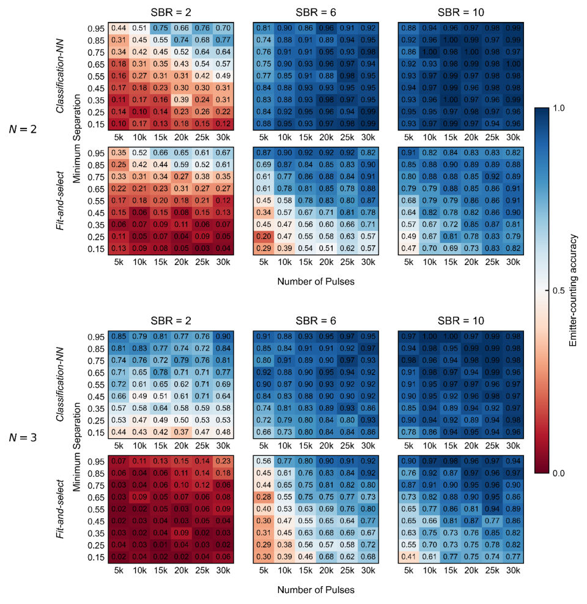
<figcaption class="paper-figure-caption"><b>Fig 4.</b> Figure 4. Emitter-counting accuracy as a function of emitter separation and photon budget. Results are shown for ground-truth emitter counts 𝑁GT = 2 and 𝑁GT = 3 (sections) and SBR = 2, 6 and 10 (columns). Within each section, the upper row shows results for the proposed Classification-NN, and the lower row shows results for the fit-and-select approach. Each heatmap shows emitter-counting accuracy as a function of the minimum ground-truth emitter separation and the photon budget 𝑛pulse, evaluated over Monte Carlo realizations on identical simulated datasets.</figcaption>
</figure>
<figure class="paper-figure-card">
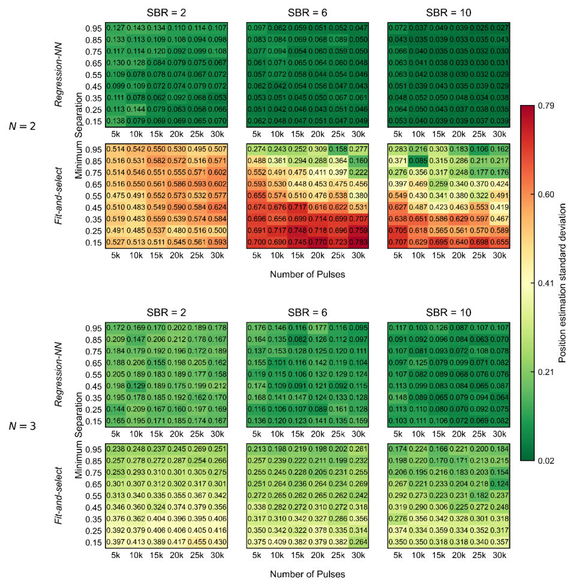
<figcaption class="paper-figure-caption"><b>Fig 5.</b> Figure 5: Position-estimation standard deviation as a function of emitter separation and photon budget. Results are shown for ground-truth emitter counts NGT = 2 and NGT = 3 (sections) and SBR 2, 6 and 10 (columns). Within each section, the upper row shows results for the proposed Regression-NN, and the lower row shows results for the existing fit-and-select approach. N is fixed to the ground-truth value for both approaches. Each heatmap shows the standard deviation of the position-estimation error as a function of the minimum ground- truth emitter separation and the number of excitation pulses, evaluated over independent Monte Carlo realizations on identical simulated datasets.</figcaption>
</figure>
</div>

<p><strong>Summary.</strong> This paper introduces a machine learning approach to overcome limitations in localizing multiple quantum emitters using quantum correlation measurements. By employing a two-stage neural network pipeline, the method accurately determines both the number and positions of emitters, showing substantial performance gains over traditional fitting techniques, particularly when photon counts are low.</p>
<p><strong>Why it may be interesting.</strong> This work bridges quantum optics measurement theory with advanced machine learning, providing a robust computational tool for characterizing complex quantum light sources, which is highly relevant for quantum sensing and imaging.</p>
<details>
<summary>Detailed structure</summary>
<p><strong>Main problem.</strong> The core problem is accurately performing multi-emitter localization, which requires simultaneously determining the number of emitters ($N$) and estimating their individual positions ($\{x_i\}$) from quantum correlation measurements.</p>
<p><strong>Main result.</strong> The proposed learned inference framework significantly outperforms traditional fit-and-select methods, achieving $>10	imes$ improvement in localization precision and requiring up to $5	imes$ fewer photons, especially in low-photon or high-background regimes.</p>
<p><strong>Method.</strong> The authors propose a two-stage deep learning pipeline: a Classification-NN to infer $N$ from intensity and correlation data, followed by a Regression-NN to estimate positions conditioned on the inferred $N$.</p>
<p><strong>Model / system.</strong> The system involves single-photon emitters (SPEs) whose photoluminescence is measured using a Hanbury Brown–Twiss (HBT) interferometer, yielding spatially sampled intensity $I(x)$ and second-order correlation $g^{(2)}(x)$ data.</p>
<p><strong>Key observables.</strong> Intensity $I(x)$, second-order correlation $g^{(2)}(x)$, Emitter Count ($N$), and Emitter Positions ($\{x_i\}$).</p>
<p><strong>Important parameters / regimes.</strong> Photon budget ($n_{	ext{pulse}}$), Signal-to-Background Ratio (SBR), and minimum emitter separation.</p>
<p><strong>Assumptions / limitations.</strong> The traditional fit-and-select method suffers from model selection bias and error propagation from multi-parameter optimization, which the learned inference bypasses.</p>
<p><strong>Figures summary.</strong> Figure 1 compares the measurement setup and the performance of the fit-and-select vs. learned inference approaches. Figure 2 demonstrates the failure modes of the fit-and-select method, showing counting accuracy degradation. Figure 3 details the dual-branch CNN architecture for both classification and regression tasks.</p>
<p><strong>Paper structure.</strong> The paper first establishes the limitations of existing fit-and-select methods. It then introduces the novel learned inference pipeline, detailing the architecture of the Classification-NN and the Regression-NN, and finally presents quantitative results demonstrating superior performance under various low-photon and high-background conditions.</p>
</details>
<details>
<summary>Abstract</summary>
<p>Quantum correlation measurements have emerged as a powerful tool for localizing multiple emitters with subwavelength separation. Multi-emitter localization consists of two distinct tasks: identifying the emitter count $N$ and estimating their positions $\left\{x^{i}\right\}$. Existing fit-and-select frameworks fit the measured intensity and autocorrelation data using several models corresponding to different values of $N$ and then select the best-supported model. This procedure lets errors from the multi-parameter optimization of emitter positions propagate into the choice of model, degrading performance under photon-limited and high-background conditions. We propose a method that directly infers the emitter count and positions from the multimodal data via learned inference. Learned inference improves both the emitter-counting accuracy and localization precision compared to the fit-and-select method. It achieves more than tenfold improvement in precision and requires up to five times fewer photons to achieve practically meaningful localization with the largest gains observed under low photon counts, strong background, narrowly spaced emitter configurations, and spatially truncated data. This photon-efficient quantum-assisted localization framework offers a promising route toward real-time biological imaging and single-particle tracking in densely labeled samples.</p>
</details>
<p><sub><a href="#top">↑ back to top</a></sub></p>

<p><a id="paper-2610.24961"></a></p>
<h3 id="run-and-tumble-particles-in-a-harmonic-external-field-constructing-the-solution-of-the-fokker-planck-equation-from-the-equations-of-motion"><a href="http://arxiv.org/abs/2610.24961v1">Run-and-tumble particles in a harmonic external field: constructing the solution of the Fokker-Planck equation from the equations of motion</a></h3>
<p><strong>Authors:</strong> Aoran Sun, Fangfu Ye, Jeff Z. Y. Chen<br>
<strong>Type:</strong> theory · <strong>Category:</strong> statistical mechanics · <strong>PDF:</strong> <a href="https://arxiv.org/pdf/2610.24961v1">https://arxiv.org/pdf/2610.24961v1</a><br>
<strong>Analysis basis:</strong> full PDF text, analyzed in chunks
<strong>Topic relevance:</strong> <code>Keldysh / 2PI / non-Gaussian methods</code> <strong>3/5</strong> · <code>methods for driven-dissipative</code> <strong>3/5</strong> · <code>Frenkel-Kontorova</code> <strong>1/5</strong> · <code>analog quantum simulation</code> <strong>1/5</strong> · <code>driven-dissipative phase transition</code> <strong>1/5</strong> · <code>non-equilibrium universality</code> <strong>1/5</strong> · <code>quantum measurements</code> <strong>1/5</strong></p>
<div class="figure-strip-hint">↔ Scroll figures horizontally</div>
<div class="paper-figures-scroll">
<figure class="paper-figure-card">
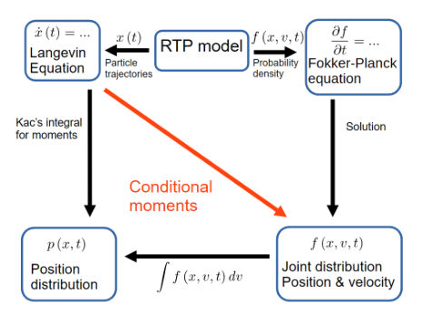
<figcaption class="paper-figure-caption"><b>Fig 1.</b> FIG. 1. Schematic presentation of the goal of this work. In a theoret- ical study of the RTP model, one may proceed along the right-hand route in the figure by considering the evolution of the joint proba- bility density of position and active velocity, appears in the Fokker– Planck equation. Alternatively, one may follow the left-hand route by considering individual trajectories following the Langevin equations. Previously, following the idea of Kac, the Langevin equations were used to compute the moments of position, which ultimately lead to the time-dependent positional distribution; in such an approach, in- formation on the active velocity is not retained. The main contribu- tion of the...</figcaption>
</figure>
<figure class="paper-figure-card">
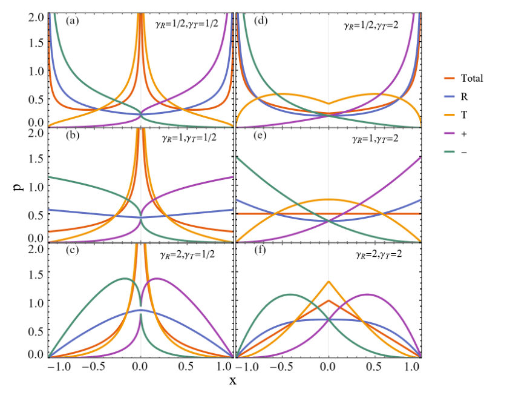
<figcaption class="paper-figure-caption"><b>Fig 2.</b> FIG. 2. Steady-state distributions of the two-state RTP model at different rates. Panels (a)–(c) illustrate cases with increasing γR at a small γT = 1/2, while panels (d)–(f) show cases with increasing γR at a larger γT = 2. The total distribution p, defined in (31), is shown by the deep orange curves, while the components pR and pT are shown in blue and orange, respectively. The velocity-dependent distributions p+ and p− appearing in (30) are shown in purple and green. For γT &lt; 1, a singular peak at the center arises from the tumble state, accompanied by a pronounced change in p± near the center. When γR &lt; 1, the peaks at the boundaries originate from particles in the corresponding run...</figcaption>
</figure>
</div>

<p><strong>Summary.</strong> This work provides a rigorous mathematical method to solve the Fokker-Planck equation for run-and-tumble particles moving in a harmonic trap. By integrating the underlying Langevin equations and calculating conditional moments, the authors derive exact steady-state distributions that confirm the consistency between the stochastic trajectory approach and the density evolution approach.</p>
<p><strong>Why it may be interesting.</strong> While focused on active matter, the rigorous mathematical techniques used—relating stochastic differential equations (Langevin) to partial differential equations (Fokker-Planck) via moment closure—are highly relevant to open quantum systems and non-equilibrium dynamics in quantum optics.</p>
<details>
<summary>Detailed structure</summary>
<p><strong>Main problem.</strong> The paper addresses the mathematical challenge of constructing the exact solution to the Fokker-Planck equation governing the probability distribution of run-and-tumble particles (RTPs) in an external harmonic potential.</p>
<p><strong>Main result.</strong> The authors successfully derived the exact steady-state distributions for the tumble and run states, demonstrating their equivalence to the known solutions of the corresponding Fokker-Planck equations.</p>
<p><strong>Method.</strong> They introduce a novel method that integrates the Langevin equations of motion by systematically constructing conditional moments and correlation functions, which is shown to match the results derived from the Fokker-Planck formalism.</p>
<p><strong>Model / system.</strong> The system models run-and-tumble particles (RTPs) whose motion is governed by a generalized Langevin equation in one dimension, subjected to a harmonic external force field. The particle's active velocity switches between 'run' and 'tumble' states according to a Markov process.</p>
<p><strong>Key observables.</strong> Joint probability density function $f(r, u, t)$, steady-state distributions for the tumble and run states, and conditional moments $\langle x(t)^l | 	ext{state} 
angle$.</p>
<p><strong>Important parameters / regimes.</strong> Harmonic potential strength ($b$), tumble rate ($\gamma$), and the time evolution parameters related to the Markov switching process.</p>
<p><strong>Assumptions / limitations.</strong> The analysis focuses on the 1D case for deriving explicit analytic solutions, and the method relies on the assumption that the Markov process governing the state is at equilibrium for steady-state calculations.</p>
<p><strong>Figures summary.</strong> Figure 1 schematically contrasts the two approaches: the 'right-hand route' (Fokker-Planck equation for the joint distribution) versus the 'left-hand route' (Langevin equations for individual trajectories).</p>
<p><strong>Paper structure.</strong> The paper develops the methodology by first establishing the Langevin equation framework, then using the law of total expectation and diagrammatic techniques to calculate conditional moments, culminating in the explicit derivation of the steady-state conditional distributions in the appendix.</p>
</details>
<details>
<summary>Abstract</summary>
<p>A method for integrating the Langevin equations of motion for run-and-tumble particles is introduced to compute the joint distribution of their position and active velocity, with and without a harmonic external force field. The key step is the construction of the moments of the distribution and the correlation functions, conditional on the particles being in a specific state at the final time. For one-dimensional run-and-tumble particles in a harmonic external potential, the exact steady-state distributions for the tumble state, as well as for the run state conditional on a specified velocity direction, are obtained. This enables us to demonstrate their equivalence to the exact solutions of the corresponding Fokker-Planck equations.</p>
</details>
<p><sub><a href="#top">↑ back to top</a></sub></p>

<p><a id="paper-2610.26657"></a></p>
<h3 id="dynamic-clustering-of-active-chemotactic-janus-particles"><a href="http://arxiv.org/abs/2610.26657v1">Dynamic clustering of active chemotactic Janus particles</a></h3>
<p><strong>Authors:</strong> Joël Mabillard, Frédéric van Wijland, Jean-Baptiste Fournier<br>
<strong>Type:</strong> theory · <strong>Category:</strong> statistical mechanics · <strong>PDF:</strong> <a href="https://arxiv.org/pdf/2610.26657v1">https://arxiv.org/pdf/2610.26657v1</a><br>
<strong>Analysis basis:</strong> full PDF text, analyzed in chunks
<strong>Topic relevance:</strong> <code>driven-dissipative phase transition</code> <strong>3/5</strong> · <code>non-equilibrium universality</code> <strong>3/5</strong> · <code>Keldysh / 2PI / non-Gaussian methods</code> <strong>2/5</strong> · <code>methods for driven-dissipative</code> <strong>2/5</strong></p>
<div class="figure-strip-hint">↔ Scroll figures horizontally</div>
<div class="paper-figures-scroll">
<figure class="paper-figure-card">
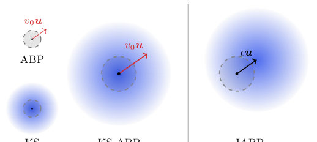
<figcaption class="paper-figure-caption"><b>Fig 1.</b> FIG. 1. Schematic representation of four particle models: Ac- tive Brownian Particle (ABP, upper left), Keller-Segel parti- cle (KS, lower left), Keller-Segel Active Brownian Particle (KS-ABP, center), and our Janus Active Brownian Particle (JABP, right). The dashed circle delineates the excluded vol- ume boundary of the particle core. Here, v0 denotes the self- propulsion velocity along the orientation vector u, and ϵ rep- resents the spatial eccentricity of the chemical source. The shaded color gradient illustrates the profile of the chemical concentration field c.</figcaption>
</figure>
<figure class="paper-figure-card">
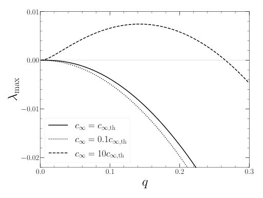
<figcaption class="paper-figure-caption"><b>Fig 2.</b> FIG. 2. Largest eigenvalue λmax(q) obtained from the linear stability analysis as a function of the wavenumber q. The three curves correspond to c∞= 0.1c∞,th (dotted), c∞= c∞,th (solid), and c∞= 10c∞,th (dashed), where cth = 13.67× 104. The instability threshold is identified by the change of sign of λmax. All other parameters are identical to those used in the simulations, with µ = −10−4 and µ′ = 10−5.</figcaption>
</figure>
<figure class="paper-figure-card">
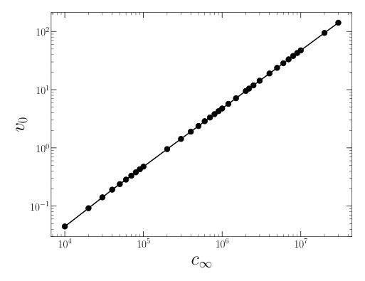
<figcaption class="paper-figure-caption"><b>Fig 3.</b> FIG. 3. Velocity v0 of a JABP particle as a function of the reservoir concentration c∞for µ = −10−4, obtained from a single particle without noise. Simulation parameters are given in Appendix C 3.</figcaption>
</figure>
<figure class="paper-figure-card">
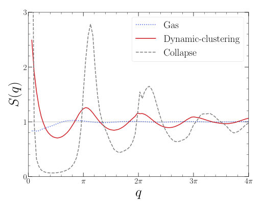
<figcaption class="paper-figure-caption"><b>Fig 4.</b> FIG. 5. Structure factor S(q) for the gas (blue dotted line), dynamic-clustering (red solid line), and collapse (gray dashed line) phases. The simulation parameters are the same as in Fig. 4.</figcaption>
</figure>
<figure class="paper-figure-card">
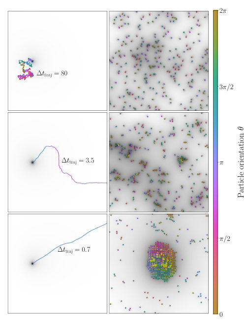
<figcaption class="paper-figure-caption"><b>Fig 5.</b> FIG. 4. Trajectory of a single particle over a time interval ∆ttraj (left) and particle configurations at a surface packing fraction of 5% (right) for the gas (top), dynamic-clustering (middle), and collapse (bottom) phases. The snapshots show a quarter of the simulation box in the z = 0 plane. Particle colors indicate their orientations, while yellow crosses mark blocked lattice sites where chemical diffusion is suppressed. The gray levels show the solute concentration. Here, µ = −10−4, µ′ = 10−5, and c∞= 104, 107, and 5×107 for the gas, dynamic-clustering, and collapse phases, respectively. Other simulation parameters are given in Appendix C 3.</figcaption>
</figure>
</div>

<p><strong>Summary.</strong> This work models active Janus particles that move by consuming a chemical solute, leading to self-propulsion and chemotaxis. By applying linear stability analysis, the authors prove that the system undergoes a transition into a dynamically clustered state. This clustering is understood as a synergy between classical phase separation mechanisms and active particle motility.</p>
<p><strong>Why it may be interesting.</strong> While focused on classical active matter, the analysis of phase transitions (clustering) using linear stability theory and the interplay between non-equilibrium driving forces (chemotaxis) and collective behavior is highly relevant to non-equilibrium statistical mechanics.</p>
<details>
<summary>Detailed structure</summary>
<p><strong>Main problem.</strong> The paper investigates the dynamic clustering behavior of active chemotactic Janus particles, which self-propel by consuming a chemical solute.</p>
<p><strong>Main result.</strong> Dynamic clustering is found to be a robust feature of the system, arising from the combined effects of Keller-Segel collapse and Motility-Induced Phase Separation (MIPS).</p>
<p><strong>Method.</strong> The analysis employs linear stability analysis on the homogeneous state to determine the critical conditions for the onset of clustering.</p>
<p><strong>Model / system.</strong> The system models active Janus colloids whose self-propulsion is governed by diffusiophoresis, interacting with a diffusing chemical solute field. The dynamics are described by coupled equations for particle positions, orientations, and the solute concentration.</p>
<p><strong>Key observables.</strong> Dynamic clustering region in the phase diagram, self-propulsion velocity ($v_0$), and the linear stability threshold ($\lambda_{max} > 0$).</p>
<p><strong>Important parameters / regimes.</strong> Reservoir concentration ($c_\infty$), phoretic mobility ($\mu$), solute diffusion ($D$), and the spatial eccentricity ($\epsilon$).</p>
<p><strong>Assumptions / limitations.</strong> Key approximations include assuming the solute gradient is uniform ($\mu
abla c$) and that the concentration profile adjusts instantaneously during the stability analysis.</p>
<p><strong>Figures summary.</strong> Figures illustrate the comparison between different particle models (ABP, KS, JABP) and show the dependence of the instability threshold ($\lambda_{max}$) on the reservoir concentration ($c_\infty$).</p>
<p><strong>Paper structure.</strong> The paper develops from the general JABP model, applies it to a specific experimental setup, and uses linear stability analysis to derive the critical threshold for clustering, comparing results across different physical limits.</p>
</details>
<details>
<summary>Abstract</summary>
<p>Modeling self-propulsion as an emergent diffusiophoretic effect, we come back to the dynamic clustering experiment of active Janus colloids. Working in the original three-dimensional geometry, and using the chemical solute concentration as a control parameter, we find that the dynamic clustering region occupies a robust fraction of the phase diagram. This behavior is rationalized using a linear stability analysis that efficiently captures the instability of the gas phase to dynamic clusters. We also find that dynamic clustering results from the combined effects of a Keller-Segel collapse and of a motility-induced phase separation, either being arrested by the orientational coupling to the chemical field in agreement with previous work.</p>
</details>
<p><sub><a href="#top">↑ back to top</a></sub></p>

<p><a id="paper-2610.25153"></a></p>
<h3 id="higher-order-disorder-correlations-control-reflected-phonon-counting-statistics"><a href="http://arxiv.org/abs/2610.25153v1">Higher-order disorder correlations control reflected phonon counting statistics</a></h3>
<p><strong>Authors:</strong> Ara Sedrakyan<br>
<strong>Type:</strong> theory · <strong>Category:</strong> disordered systems and neural networks · <strong>PDF:</strong> <a href="https://arxiv.org/pdf/2610.25153v1">https://arxiv.org/pdf/2610.25153v1</a><br>
<strong>Analysis basis:</strong> full PDF text, analyzed in chunks
<strong>Topic relevance:</strong> <code>Full counting statistics</code> <strong>3/5</strong> · <code>Keldysh / 2PI / non-Gaussian methods</code> <strong>2/5</strong> · <code>analog quantum simulation</code> <strong>1/5</strong> · <code>correlated / nonlocal dissipation</code> <strong>1/5</strong> · <code>interference shaping light</code> <strong>1/5</strong> · <code>methods for driven-dissipative</code> <strong>1/5</strong> · <code>quantum measurements</code> <strong>1/5</strong></p>
<div class="figure-strip-hint">↔ Scroll figures horizontally</div>
<div class="paper-figures-scroll">
<figure class="paper-figure-card">
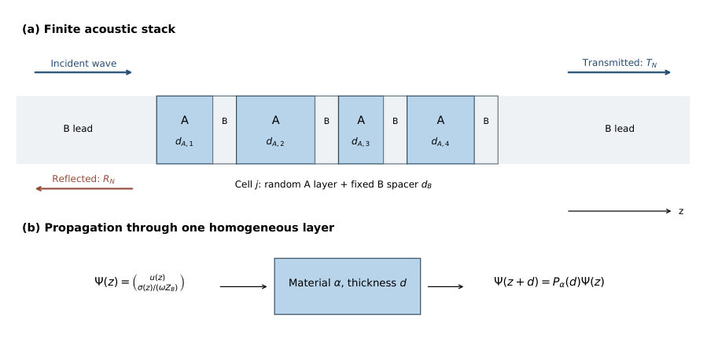
<figcaption class="paper-figure-caption"><b>Fig 1.</b> FIG. 1. Scattering geometry and the meaning of the layer propagator. (a) A wave enters a finite stack from a lead of material B. The A layers have random thicknesses dA,j, while all B spacers have the same thickness dB. The reflected and transmitted energy fractions are RN and TN. The drawing is schematic and does not fix the thickness ratios. (b) Equation (1) propagates displacement and normalized stress from the left face of one homogeneous layer to its right face. Interface continuity permits these propagators to be multiplied directly.</figcaption>
</figure>
<figure class="paper-figure-card">
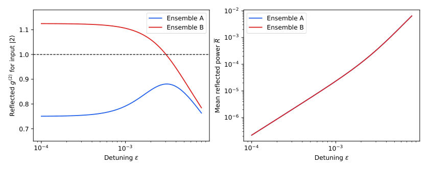
<figcaption class="paper-figure-caption"><b>Fig 2.</b> FIG. 2. Exact reflectance calculations for four cells, n0 = 5 and r = 2. Left: pooled reflected factorial correlation for input |2⟩in the two equal-spectrum ensembles; the dashed line is the Poisson counting-variance threshold. Right: their nearly identical mean reflected powers.</figcaption>
</figure>
<figure class="paper-figure-card">
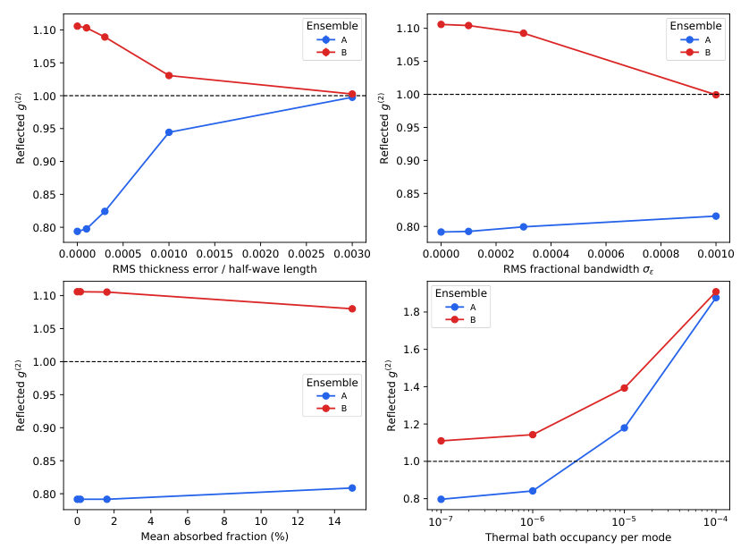
<figcaption class="paper-figure-caption"><b>Fig 3.</b> FIG. 3. Robustness tests for input |2⟩, four cells, r = 2 and carrier detuning ϵ = 0.001. Thickness-error points are Monte Carlo estimates with batch standard errors; bandwidth and propagation-loss points are numerical evaluations of the finite ensemble. Thermal-background values follow Eq. (36).</figcaption>
</figure>
</div>

<p><strong>Summary.</strong> This paper analyzes how structural disorder correlations in an acoustic stack dictate the counting statistics of reflected phonons. By employing transfer-matrix methods and quantum input-output mapping, the authors show that the second-order correlation function $g^{(2)}$ depends on the fourth moment of the disorder ($\mu_4$). This highlights that higher-order disorder statistics are crucial for accurately predicting quantum noise in disordered media.</p>
<p><strong>Why it may be interesting.</strong> It provides a concrete, non-photonic realization of how disorder correlations influence quantum noise statistics, drawing parallels between acoustic scattering and quantum light-matter interactions.</p>
<details>
<summary>Detailed structure</summary>
<p><strong>Main problem.</strong> The study investigates which structural disorder correlations, beyond just the power spectrum, govern the counting statistics of reflected phonons in a one-dimensional acoustic stack.</p>
<p><strong>Main result.</strong> The reflected factorial correlation $g^{(2)}$ depends on higher-order disorder moments ($\mu_4$), demonstrating that the counting statistics are sensitive to correlations beyond the two-point function.</p>
<p><strong>Method.</strong> The authors use an elastic transfer-matrix approach combined with quantum input-output mapping to relate classical scattering moments to quantum phonon counting statistics.</p>
<p><strong>Model / system.</strong> The system is a one-dimensional acoustic stack (multilayer structure) where elastic waves propagate normally incident on fluctuating layers. The analysis is formulated using transfer matrices and innovation filters.</p>
<p><strong>Key observables.</strong> Reflected-power second moment, ensemble-averaged reflected factorial correlation $g^{(2)}$, and the higher-order resistance-growth coefficient.</p>
<p><strong>Important parameters / regimes.</strong> The fourth moment of the innovation ($\mu_4$), the number of layers ($N$), and the detuning parameter ($\epsilon$).</p>
<p><strong>Assumptions / limitations.</strong> The analysis assumes lossless, linear elastic propagation and focuses on disorder-averaged pulse statistics, confirming that the disorder does not generate nonclassicality from coherent input.</p>
<p><strong>Figures summary.</strong> Figures illustrate the scattering geometry and the layer propagator, while tables/figures show the dependence of $g^{(2)}$ on parameters like RMS thickness error and fractional bandwidth.</p>
<p><strong>Paper structure.</strong> The paper progresses from establishing the classical scattering problem and relating it to quantum counting statistics, deriving the dependence of $g^{(2)}$ on $\mu_4$, and finally testing this dependence using explicit ensemble constructions and numerical simulations.</p>
</details>
<details>
<summary>Abstract</summary>
<p>We investigate how structural correlations beyond the power spectrum affect phonon counting in a one-dimensional acoustic stack. An integer-thickness construction cancels the extensive leading backscattering term and leaves a finite-chain reflection amplitude determined by endpoint innovations. For symmetric independent innovations with unit variance and fourth moment $μ_4$, the normalized reflected-power second moment tends to $(μ_4+5)/4$. With vacuum environmental inputs, a two-phonon Fock input therefore gives an ensemble-averaged reflected factorial correlation $g^{(2)}=(μ_4+5)/8$. Two explicitly constructed ensembles with identical mean and complete two-point correlation function yield $g^{(2)}=3/4$ and $9/8$, placing their counting variances on opposite sides of the Poisson value. Conditional tensor averaging also gives a general fourth-order resistance-growth coefficient for arbitrary impedance contrast, including a positive higher-scattering contribution not recovered by shifting the lowest-order spectrum. Exact enumeration confirms the fixed-$N$, small-detuning limit and shows that increasing $N$ at fixed detuning produces a crossover governed by accumulated higher-order bulk scattering rather than convergence to the endpoint formula. Further calculations test bandwidth, thickness error, propagation loss and thermal background. The result concerns disorder-averaged pulse statistics; it neither creates nonclassicality from coherent input nor changes the conditional factorial correlation of an individually resolved passive sample.</p>
</details>
<p><sub><a href="#top">↑ back to top</a></sub></p>

<p><a id="paper-2610.24482"></a></p>
<h3 id="local-response-theory-of-multiparameter-sudden-quench-quantum-otto-engines"><a href="http://arxiv.org/abs/2610.24482v1">Local response theory of multiparameter sudden-quench quantum Otto engines</a></h3>
<p><strong>Authors:</strong> Dehua Liu, Yihang Cai, Biao Xiong, Jibing Liu, Chuanjia Shan, Jianhui Wang<br>
<strong>Type:</strong> theory · <strong>Category:</strong> statistical mechanics · <strong>PDF:</strong> <a href="https://arxiv.org/pdf/2610.24482v1">https://arxiv.org/pdf/2610.24482v1</a><br>
<strong>Analysis basis:</strong> full PDF text, analyzed in chunks
<strong>Topic relevance:</strong> <code>non-equilibrium universality</code> <strong>3/5</strong> · <code>Keldysh / 2PI / non-Gaussian methods</code> <strong>2/5</strong> · <code>methods for driven-dissipative</code> <strong>2/5</strong> · <code>analog quantum simulation</code> <strong>1/5</strong> · <code>driven-dissipative phase transition</code> <strong>1/5</strong> · <code>quantum measurements</code> <strong>1/5</strong></p>
<div class="figure-strip-hint">↔ Scroll figures horizontally</div>
<div class="paper-figures-scroll">
<figure class="paper-figure-card">
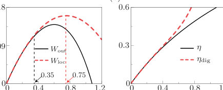
<figcaption class="paper-figure-caption"><b>Fig 1.</b> FIG. 1: (a) Exact output work Wout and local quadratic work Wloc, and (b) exact efficiency η and the diagnostic quantity ηdig, as functions of the radial quench amplitude ξ∥along the path ∆λ(ξ∥). The black solid and red dashed lines denote the exact and local results, respectively. The black and red vertical dashed lines mark the pathwise 2%-deviation bench- mark ξ∥≃0.35 and the unconstrained optimal radial ampli- tude b∥/(2κ∥) ≃0.75, respectively. The other parameters are λ0 = (0.6, 0.8), βh = 0.6, and βc = 2.0.</figcaption>
</figure>
<figure class="paper-figure-card">
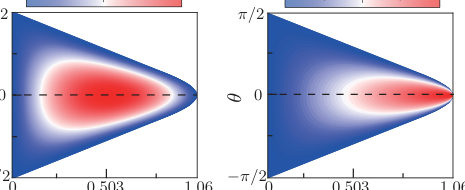
<figcaption class="paper-figure-caption"><b>Fig 2.</b> FIG. 2: Performance contour plots for the sudden-quench Otto cycle with the two-level working medium. The exact output work (a) and exact efficiency (b) are displayed in the quench-coordinate plane parameterized by the amplitude ξ and angle θ. The other parameters are the same as in Fig. 1.</figcaption>
</figure>
<figure class="paper-figure-card">
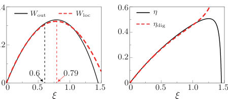
<figcaption class="paper-figure-caption"><b>Fig 3.</b> FIG. 3: (a) Exact output work Wout and local quadratic work Wloc, and (b) exact efficiency η and diagnostic quantity ηdig, along the unconstrained-optimal quench path ∆λunc(ξ) = ξvunc. The black and red vertical dashed lines indicate the selected amplitude bound ǫ = 0.6 and the unconstrained op- timal amplitude ξunc ≃0.79, respectively. The other param- eters are the same as in Table I.</figcaption>
</figure>
<figure class="paper-figure-card">
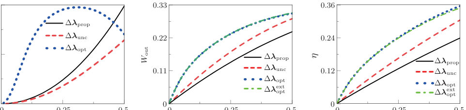
<figcaption class="paper-figure-caption"><b>Fig 4.</b> FIG. 4: (a) Relative deviation δW between Wout and Wloc along the three quench paths ∆λprop(ξ), ∆λunc(ξ), and ∆λopt(ξ). (b) Exact output work along these paths, together with the maximum exact output work. (c) Exact efficiency along the same paths and along ∆λext opt(ξ). Black solid, red dashed, and blue dotted curves denote ∆λprop(ξ), ∆λunc(ξ), and ∆λopt(ξ), respectively. In panels (b) and (c), the cyan dash-dotted curve denotes the result associated with ∆λext opt(ξ). The other parameters are the same as in Table I.</figcaption>
</figure>
</div>

<p><strong>Summary.</strong> This paper introduces a local response theory to optimize the work output of quantum Otto engines subjected to multiple parameters being quenched simultaneously. It shows that the local work decomposes into a thermal-bias gain and a response cost, whose competition dictates the optimal quench direction. This provides a powerful, practical tool for designing efficient quantum thermal machines.</p>
<p><strong>Why it may be interesting.</strong> It provides a rigorous, local, and practical criterion for optimizing non-equilibrium work extraction in complex quantum thermal machines, bridging quantum thermodynamics with linear response theory.</p>
<details>
<summary>Detailed structure</summary>
<p><strong>Main problem.</strong> The paper develops a local response theory to determine the optimal direction and amplitude of a small quench vector that maximizes the local quadratic approximation to the total output work in multiparameter sudden-quench quantum Otto engines.</p>
<p><strong>Main result.</strong> The optimal quench vector is determined by the balance between the thermal-bias projection and the response-cost eigenvalues across the response eigenchannels.</p>
<p><strong>Method.</strong> The theory uses a local response expansion, decomposing the local quadratic work into a thermal-bias gain and a quadratic response cost, which are then analyzed via diagonalization.</p>
<p><strong>Model / system.</strong> The system is a quantum Otto engine whose Hamiltonian depends linearly on $M$ externally tunable parameters ($\lambda$). The analysis is applied to a two-level system and a finite interacting XYZ spin chain.</p>
<p><strong>Key observables.</strong> Local quadratic work ($W_{loc}$), total output work ($W_{out}$), thermal-bias gain, and quadratic response cost.</p>
<p><strong>Important parameters / regimes.</strong> Small quench amplitude ($\epsilon$), bath temperatures ($eta_h, eta_c$), and the quench vector direction/amplitude.</p>
<p><strong>Assumptions / limitations.</strong> The analysis relies on the small quench amplitude limit, and the work stroke is modeled as a sudden quench.</p>
<p><strong>Paper structure.</strong> The paper derives the exact work, then develops the local quadratic work and optimization criteria, and finally illustrates the theory using two distinct physical examples.</p>
</details>
<details>
<summary>Abstract</summary>
<p>Multiparameter quantum Otto engines raise an optimization problem absent in single-parameter cycles: which small quench vector maximizes the quadratic approximation to the exact output work in a multidimensional control space? We develop a local response theory for sudden-quench Otto engines with quantum working media described by linearly controlled Hamiltonians. We show that the local quadratic work decomposes into a thermal-bias gain and a quadratic response cost, whose competition determines the quench vector that maximizes the local quadratic work at a prescribed quench amplitude. We illustrate the theory in a minimal two-level working medium, where radial and transverse quenches play distinct roles, and in a finite interacting XYZ spin chain, where the resulting quench vector is determined by the balance between thermal-bias and response cost. Our results provide a practical local criterion for designing small multiparameter quenches in sudden-quench quantum Otto engines.</p>
</details>
<p><sub><a href="#top">↑ back to top</a></sub></p>

<p><a id="paper-2610.26367"></a></p>
<h3 id="spatiotemporal-imaging-of-thermally-driven-metal-insulator-phase-domain-propagation-in-vo2"><a href="http://arxiv.org/abs/2610.26367v1">Spatiotemporal Imaging of Thermally Driven Metal-Insulator Phase Domain Propagation in VO2</a></h3>
<p><strong>Authors:</strong> Ilaria Delbono, Raouf Amara, Matias Feldman, Hankun Yang, Cédric Leau, Carlo Scian, Erwan Dandeu, Sébastien Royer, Debora Pierucci, Emmanuel Lhuillier, Franck Vidal, Tiziana Cesca, Hilton B. de Aguiar, Jose Ordonez-Miranda, Danièle Fournier, Raj Pandya, Boris Kalinic, Giovanni Mattei, James K. Utterback<br>
<strong>Type:</strong> both · <strong>Category:</strong> statistical mechanics · <strong>PDF:</strong> <a href="https://arxiv.org/pdf/2610.26367v1">https://arxiv.org/pdf/2610.26367v1</a><br>
<strong>Analysis basis:</strong> full PDF text, analyzed in chunks
<strong>Topic relevance:</strong> <code>driven-dissipative phase transition</code> <strong>3/5</strong> · <code>non-equilibrium universality</code> <strong>3/5</strong> · <code>methods for driven-dissipative</code> <strong>2/5</strong> · <code>Frenkel-Kontorova</code> <strong>1/5</strong> · <code>Keldysh / 2PI / non-Gaussian methods</code> <strong>1/5</strong></p>
<div class="figure-strip-hint">↔ Scroll figures horizontally</div>
<div class="paper-figures-scroll">
<figure class="paper-figure-card">
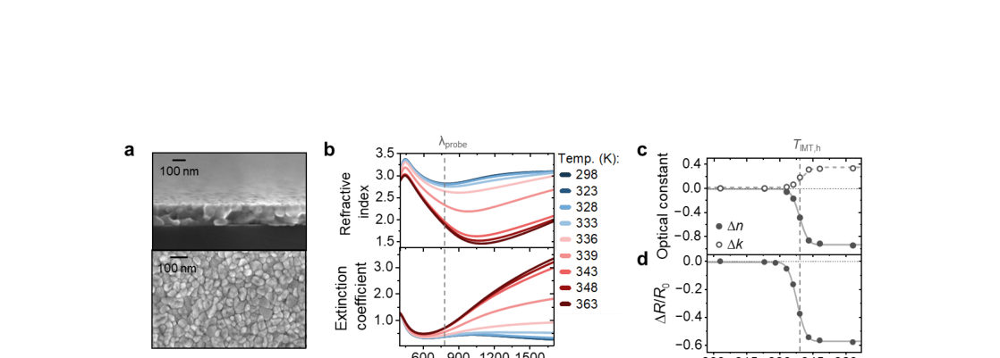
<figcaption class="paper-figure-caption"><b>Fig 1.</b> Fig. 1. Morphological and optical characterization of VO2 thin film. (a) SEM side view and top view of VO2 thin films. (b) Refractive index (n, top panel) and extinction coefficient (k, bottom panel) of a VO2 thin film for increasing temperature. The vertical dashed gray line represents the probe wavelength. (c) Variation of the optical constants at 775 nm relative to 298 K, fit to Eq. (S1). (d) Reflectance change at 775 nm relative to 298 K simulated from optical constants in (c). The vertical dashed gray line represents the experimental phase transition temperature TIMT,h. Optical pump–probe imaging of phase domain To trigger the VO2 phase transition and spatiotemporally track the...</figcaption>
</figure>
<figure class="paper-figure-card">
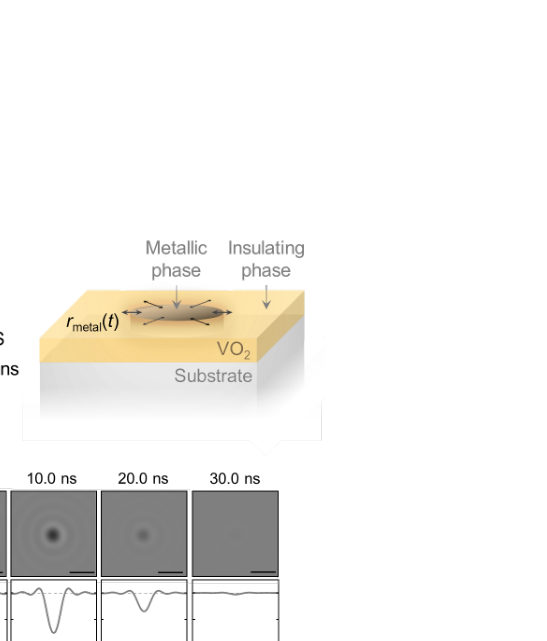
<figcaption class="paper-figure-caption"><b>Fig 2.</b> Fig. 2. stroboSCAT technique. (a) Schematic representation of the stroboSCAT experimental setup and observation of metallic phase domain propagation. DM labels the dichroic mirror and BS labels the 50/50 beam splitter. (b) Representative stroboSCAT data for selected pump–probe time delays after photoexcitation at 635 nm: top row shows spatially resolved maps of ∆R/R0 probed at 775 nm; bottom row displays the corresponding radial profiles, mirrored across the origin. Scale bars: 1 µm.</figcaption>
</figure>
<figure class="paper-figure-card">
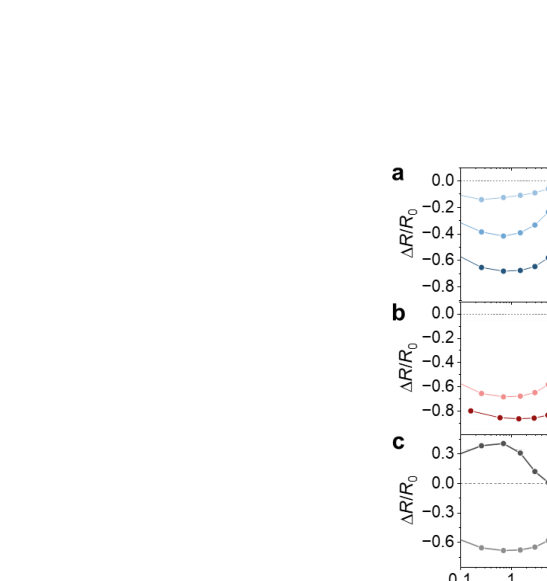
<figcaption class="paper-figure-caption"><b>Fig 3.</b> Fig. 3. Influence of pump fluence, film thickness, and substrate on VO2 phase relaxation kinetics. Peak reflectance change time traces at 775 nm for (a) a 45 nm-thick VO2 film on silica under three different excitation fluences, (b) VO2 films on silica with thicknesses of 45 nm and 180 nm excited at a 1/e2 pump fluence of 7.3 mJ/cm2, and (c) 45 nm-thick VO2 films on silica and silicon substrates, excited at a pump fluence of 7.3 mJ/cm2. The pump–probe time delay of 0 ns, not shown on the logarithmic time axis, was defined as the peak of the Gaussian function assumed for the instrument response function (IRF).</figcaption>
</figure>
<figure class="paper-figure-card">
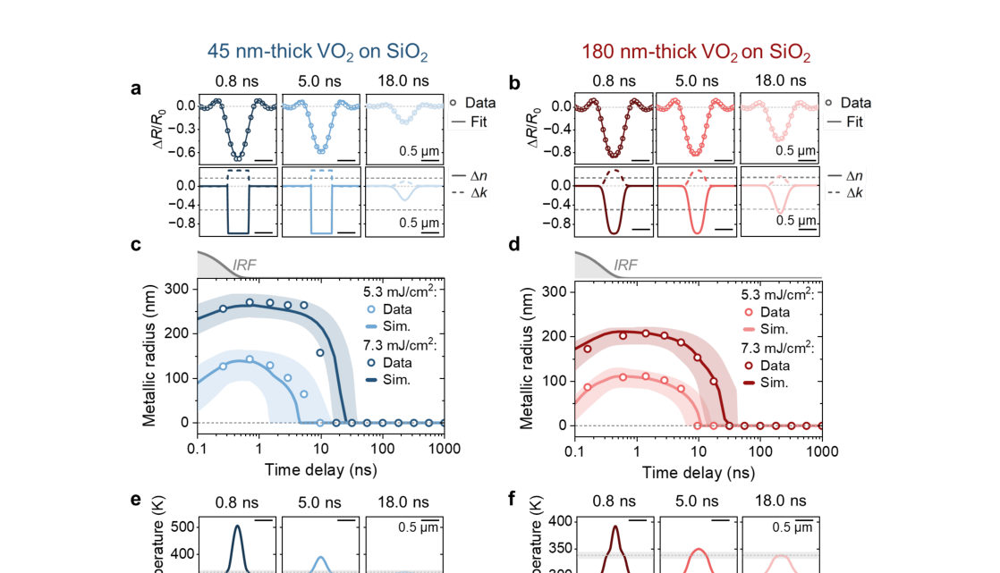
<figcaption class="paper-figure-caption"><b>Fig 4.</b> Fig. 4. Fitting of the experimental data and simulations of metallic domain size evolution. (a-b) Top row, experimental transient scattering profiles (empty dots) and fitting curves (solid lines) for selected time delays; Bottom row, the fitted change in the extinction coefficient (solid curves) and in the refractive index (dashed curves) relative to panel (a,b). The experimental data and the fits are reported for (a) 45 nm-thick and (b) 180 nm-thick VO2 film on silica substrate excited at 7.3 mJ/cm2. The gray dashed lines indicate where the changes in the refractive index and extinction coefficient exceed half of their saturation values, corresponding to the onset of the insulator-to-metal...</figcaption>
</figure>
<figure class="paper-figure-card">
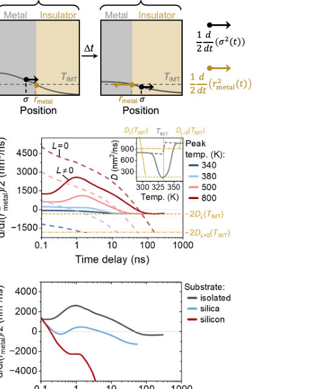
<figcaption class="paper-figure-caption"><b>Fig 5.</b> Fig. 5. Simulations of metallic domain size evolution. (a) Schematic depiction of temperature profile and phase boundary evolution including stages of propagation outward, reversal, and inward. The metallic and insulating domains are denoted by grey and yellow shading, respectively. The radial positions of the phase domain boundary, rmetal, and the standard deviation of the temperature profile, , are indicated along the x-axis. The σ corresponding direction of propagation and magnitude of the instantaneous diffusivities of</figcaption>
</figure>
</div>

<p><strong>Summary.</strong> This work uses advanced optical microscopy and thermal simulations to map the dynamics of the metal-insulator phase boundary in VO2. It demonstrates that the phase front motion is fundamentally controlled by heat dissipation, establishing a quantitative link between thermal transport and phase-transition kinetics. This framework is valuable for controlling phase-change materials for photonic applications.</p>
<p><strong>Why it may be interesting.</strong> The work provides a detailed, quantitative framework for understanding non-equilibrium phase transitions driven by thermal gradients, which has parallels in studying quench dynamics or domain wall motion in other condensed matter systems.</p>
<details>
<summary>Detailed structure</summary>
<p><strong>Main problem.</strong> The study investigates the nature and dynamics of the mesoscale, thermally driven propagation of the insulator-metal phase boundary in VO2 thin films.</p>
<p><strong>Main result.</strong> The phase front propagation is governed by heat flow, and while it can propagate faster than predicted by simple thermal diffusion, the dynamics are successfully modeled by linking heat dissipation to the phase-front motion.</p>
<p><strong>Method.</strong> The research combines stroboscopic optical scattering microscopy for in-situ spatiotemporal imaging with finite-element simulations of nonlinear, latent-heat-modulated thermal transport.</p>
<p><strong>Model / system.</strong> The system is VO2 thin films undergoing a first-order solid-solid phase transition. The modeling incorporates nonlinear thermal transport, latent heat effects, and the distinction between temperature-field evolution and phase-boundary isotherm motion.</p>
<p><strong>Key observables.</strong> Lateral spatiotemporal evolution of the metallic phase domain, phase boundary position, instantaneous effective diffusivity ($D_{	ext{eff}}(t)$), and reflectance change ($\Delta R/R_0$).</p>
<p><strong>Important parameters / regimes.</strong> Excitation fluence, film thickness, substrate thermal conductivity, and the latent heat of the transition.</p>
<p><strong>Assumptions / limitations.</strong> The approach assumes the dynamics can be described by heat flow governed by Fourier's law, and that the phase boundary motion can be characterized by an effective diffusivity.</p>
<p><strong>Figures summary.</strong> Figures show the spatiotemporal dynamics of the metal-insulator boundary using stroboSCAT, and supplementary figures compare experimental and simulated instantaneous diffusivity ($D_{	ext{eff}}(t)$) derived from the evolution of the domain radius.</p>
<p><strong>Paper structure.</strong> The paper first establishes the experimental setup and observes the domain evolution. It then develops theoretical models comparing instantaneous diffusivity versus velocity, showing that diffusivity is the key parameter. Finally, it applies these models to analyze the experimental data, confirming the link between heat dissipation and phase-front kinetics.</p>
</details>
<details>
<summary>Abstract</summary>
<p>Achieving a detailed picture of the nature and dynamics of phase boundaries remains a major challenge, particularly solid-solid transitions central to phase-change materials. Here, we use stroboscopic optical scattering microscopy and finite-element simulations to study the nonlinear thermally driven motion of the mesoscale insulator-metal phase boundary in VO2 thin films. We visualize the lateral spatiotemporal evolution of a diffraction-limited photoinduced metallic phase domain, resolving its outward propagation, contraction, and ultimate disappearance. The phase boundary dynamics are governed by heat flow, which can be controlled by excitation fluence, film thickness, and substrate thermal conductivity. Parameter-free agreement between the data and nonlinear thermal transport simulations identify the phase boundary transport as locally diffusive under this regime. We quantify how the latent heat acts as a thermal inertia, suppressing transport and prolonging the phase coexistence. Paradoxically, despite being driven by the underlying thermal gradient locally described by Fourier's law, the mesoscale phase front propagates faster than expected from thermal diffusion. This phenomenon arises from the distinction between temperature-field evolution and phase-boundary isotherm motion. These results establish a link between heat dissipation and mesoscale phase-front motion, providing a framework for controlling phase-transition kinetics relevant to photonics applications of VO2. We anticipate that this approach generalizes to a broad class of first- and second-order transitions.</p>
</details>
<p><sub><a href="#top">↑ back to top</a></sub></p>

<p><a id="paper-2610.26041"></a></p>
<h3 id="time-resolved-transient-absorption-spectroscopy-with-quantum-light"><a href="http://arxiv.org/abs/2610.26041v1">Time-resolved transient absorption spectroscopy with quantum light</a></h3>
<p><strong>Authors:</strong> Mingrui Yuan, Nikolay V. Golubev<br>
<strong>Type:</strong> theory · <strong>Category:</strong> other · <strong>PDF:</strong> <a href="https://arxiv.org/pdf/2610.26041v1">https://arxiv.org/pdf/2610.26041v1</a><br>
<strong>Analysis basis:</strong> full PDF text, analyzed in chunks
<strong>Topic relevance:</strong> <code>Keldysh / 2PI / non-Gaussian methods</code> <strong>3/5</strong> · <code>interference shaping light</code> <strong>3/5</strong> · <code>methods for driven-dissipative</code> <strong>3/5</strong> · <code>quantum measurements</code> <strong>1/5</strong></p>
<div class="figure-strip-hint">↔ Scroll figures horizontally</div>
<div class="paper-figures-scroll">
<figure class="paper-figure-card">
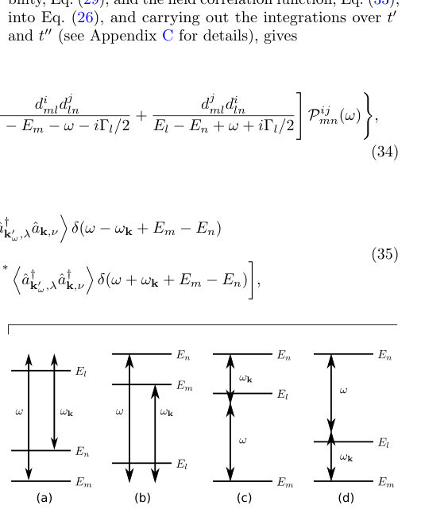
<figcaption class="paper-figure-caption"><b>Fig 1.</b> FIG. 1. Diagrams illustrating possible arrangements of the energy levels and the corresponding energy conservation condi- tions imposed by Eqs. (34) and (35). The initially populated states |m⟩and |n⟩are connected by the coherence ρnm, |l⟩is the state reached through the two dipole transitions, ω is the detected photon energy, and ωk that of the correlated incident mode. (a), (b) Pathways selected by the normal correlations, and (c), (d) pathways selected by the anomalous correlations.</figcaption>
</figure>
<figure class="paper-figure-card">

<figcaption class="paper-figure-caption"><b>Fig 2.</b> FIG. 2. Influence of the spectral coherence of the probe field on the transient absorption signal from a time-evolving target. (a) Schematic energy-level diagram and the electric dipole couplings between the levels. Initial state is prepared as a coherent superposition of the two lowest states, ρ11 = ρ22 = ρ12 = ρ21 = 1/2. (b) Normalized incident photon-number spectrum N bg ω , which is taken to be identical for the incoherent and coherent probes. The shaded band marks the detected photon energy range displayed in (d) and (f). (c) Spectrally incoherent probe: representative monochromatic components at 20, 21.5, and 23 eV that carry no mutual phase relation and therefore do not form a...</figcaption>
</figure>
<figure class="paper-figure-card">

<figcaption class="paper-figure-caption"><b>Fig 3.</b> FIG. 3. Comparison of a coherent and a squeezed vacuum probe with identical spectral photon-number distributions. (a) Three- level target with the corresponding couplings between the levels. The initial state is prepared as ρ11 = ρ33 = ρ13 = ρ31 = 1/2. (b) Normalized incident photon spectrum N bg ω , consisting of two bands centered at ω12 and ω23 and identical for both coherent and squeezed probes. (c), (e) Expectation value of the electric field ⟨ˆE(t)⟩(red solid line) together with its variance (shaded area) for the coherent and the squeezed probe. For the squeezed vacuum the mean field vanishes, and only the variance carries the temporal structure of the probe. (d), (f) Normalized...</figcaption>
</figure>
<figure class="paper-figure-card">

<figcaption class="paper-figure-caption"><b>Fig 4.</b> FIG. 4. Normal, ⟨ˆa† ωˆaω′⟩, and anomalous, ⟨ˆa† ωˆa† ω′⟩, field cor- relations of the coherent [(a),(b)] and two-mode squeezed vacuum [(c),(d)] probes with identical spectral photon-number distributions. The energy axes are depicted relative to Ω/2 = (E3 −E1)/2 = 2.5 eV, and all panels share a com- mon color scale. The dashed line marks ω = ω′. For the coherent probe both types of correlations contain contribu- tions within and between the two spectral bands, whereas for the squeezed vacuum the normal correlations remain within each band and the anomalous correlations couple the bands with a larger magnitude than in the coherent case.</figcaption>
</figure>
</div>

<p><strong>Summary.</strong> This paper presents a comprehensive quantum theory for Time-resolved Transient Absorption Spectroscopy, treating both the matter and the probe light quantum mechanically. It derives how quantum correlations within the probe field can alter the measured spectral signal beyond what classical light sources can achieve. This work provides a fundamental theoretical foundation for using quantum light in ultrafast spectroscopy.</p>
<p><strong>Why it may be interesting.</strong> This is highly relevant as it pushes the theoretical description of ultrafast spectroscopy into the quantum regime, providing tools to predict and interpret signals generated by non-classical light sources.</p>
<details>
<summary>Detailed structure</summary>
<p><strong>Main problem.</strong> To develop a fully quantum theory for Time-resolved Transient Absorption Spectroscopy (TR-TAS) that accurately describes the linear response of a non-equilibrium target to quantum probe fields, moving beyond classical approximations.</p>
<p><strong>Main result.</strong> The work establishes a general quantum framework showing that quantum correlations in the probe field can modify the transient absorption spectrum in ways unattainable with classical light sources.</p>
<p><strong>Method.</strong> The theory uses the von Neumann equation for the density matrix, quantizes the probe field using bosonic operators, and derives the measured signal by analyzing the expectation value of an effective photon-number operator.</p>
<p><strong>Model / system.</strong> The system involves a target (described by fermionic operators) coupled to a quantized electromagnetic probe field. The Hamiltonian includes terms for the target, the field, and their interaction, allowing for the calculation of field-matter correlations.</p>
<p><strong>Key observables.</strong> The detected spectral intensity $I(\omega)$ or the effective photon-number operator $\hat{O}$, which is decomposed into background, interference, and radiation contributions.</p>
<p><strong>Important parameters / regimes.</strong> The analysis considers various light states, including incoherent, coherent, and squeezed-light probes, and operates in the linear response regime.</p>
<p><strong>Assumptions / limitations.</strong> The initial state is assumed uncorrelated ($\hat{
ho}(t_i) = \hat{
ho}_t(t_i) \otimes \hat{
ho}_b(t_i)$), and the theory builds upon the general quantum formulation of the interaction.</p>
<p><strong>Figures summary.</strong> The notes detail the mathematical structure of the signal decomposition ($N_\omega = N_{	ext{bg},\omega} + N_{	ext{int},\omega} + N_{	ext{rad},\omega}$) and the derivation of field operator evolution in the Heisenberg picture.</p>
<p><strong>Paper structure.</strong> The paper progresses by first establishing the general quantum framework, then decomposing the measured signal into distinct physical contributions (background, interference, radiation), and finally deriving the necessary field operator evolutions and correlation functions for specific light states like squeezed vacuum.</p>
</details>
<details>
<summary>Abstract</summary>
<p>We present a fully quantum theory of time-resolved transient absorption spectroscopy, providing a general framework for describing the linear response of a nonequilibrium target to quantum probe fields beyond the semiclassical approximation. We elucidate how quantum correlations between probe-field frequency modes couple to coherences in the target and derive a simple expression for computing the resulting spectroscopic signals. We identify conditions under which quantum light can modify transient absorption spectra beyond the limits achievable with classical fields. Our work establishes a theoretical foundation for exploiting quantum light in ultrafast spectroscopy and suggests new routes for resolving dynamics in matter on timescales shorter than the duration of the probe pulse.</p>
</details>
<p><sub><a href="#top">↑ back to top</a></sub></p>

<p><a id="paper-2610.25020"></a></p>
<h3 id="fast-and-high-fidelity-motional-state-preserving-transport-in-optical-tweezers"><a href="http://arxiv.org/abs/2610.25020v1">Fast and High-Fidelity Motional-State-Preserving Transport in Optical Tweezers</a></h3>
<p><strong>Authors:</strong> Wen-hao Wang, Jian-gong Hu, Guang-ming Huang, Gao-xiang Li, Cheng Sheng<br>
<strong>Type:</strong> theory · <strong>Category:</strong> other · <strong>PDF:</strong> <a href="https://arxiv.org/pdf/2610.25020v1">https://arxiv.org/pdf/2610.25020v1</a><br>
<strong>Analysis basis:</strong> full PDF text, analyzed in chunks
<strong>Topic relevance:</strong> <code>analog quantum simulation</code> <strong>3/5</strong> · <code>QC/QI experiment</code> <strong>2/5</strong> · <code>methods for driven-dissipative</code> <strong>2/5</strong> · <code>Rydberg arrays</code> <strong>1/5</strong> · <code>quantum measurements</code> <strong>1/5</strong></p>
<div class="figure-strip-hint">↔ Scroll figures horizontally</div>
<div class="paper-figures-scroll">
<figure class="paper-figure-card">

<figcaption class="paper-figure-caption"><b>Fig 1.</b> FIG. 1. Single-atom transport and control objective. A Gaussian optical tweezer carries the atom from site A to site B with center x0(t) and depth U(t). The initial state is either the motional ground state or an incoherent mixture with populations pn. A common waveform is used to preserve the occupied motional-state labels. Here T denotes tf. The potential-energy zero and illustrative depth excursion are schematic, whereas Eq. (1) uses zero potential at infinity and the numerical depth modulation is bounded by 5%.</figcaption>
</figure>
<figure class="paper-figure-card">

<figcaption class="paper-figure-caption"><b>Fig 2.</b> FIG. 2. Ground-state transport over L = 12.6 µm. (a)–(e) use tf = 28.5 µs: (a) physical trap centers for STA, trajectory- only, and joint protocols, with the auxiliary qc(t); (b) optimized center corrections relative to STA; (c) joint depth U(t)/U0; (d) terminal populations Pn for the displayed vibrational states; (e) infidelity across accepted iterations of the trajectory-only, depth-coupled, and full-joint stages; vertical guides mark the stage boundaries. (f) Terminal infidelities for separately optimized 30.5- and 28.5 µs tasks after refined repropagation. The STA bars are shown at unity scale.</figcaption>
</figure>
<figure class="paper-figure-card">

<figcaption class="paper-figure-caption"><b>Fig 3.</b> FIG. 3. Ground-state joint control under varied transport conditions. (a) Distance scan at tf = 30.5 µs. (b) Duration scan at L = 12.6 µm. Each marker denotes a separately opti- mized waveform followed by independent refined propagation. Neighboring markers are discrete tasks rather than a contin- uous fidelity frontier.</figcaption>
</figure>
<figure class="paper-figure-card">

<figcaption class="paper-figure-caption"><b>Fig 4.</b> FIG. 4. Controls and state-resolved transport for two ini- tial motional distributions. (a) Low-lying Gaussian-spectrum populations. (b) Physical center waveforms; the inset shows their differences from the ground-state control. (c) Relative depth waveforms. (d) Same-state probabilities Fn for reuse of the ground-state control and for separately optimized en- semble controls. Population-weighted fidelities are reported in the text; initial-state truncation checks are given in Ap- pendix A. For the shared ground-state waveform, overlapping state labels have the same Fn; only their statistical weights differ.</figcaption>
</figure>
<figure class="paper-figure-card">

<figcaption class="paper-figure-caption"><b>Fig 5.</b> FIG. 5. Population-weighted error contributions and staged optimization. (a),(b) Contributions pn(1 −Fn) for the two ensembles, comparing STA, motion-only, and full joint con- trols. (c),(d) Total weighted infidelity at successive optimiza- tion stages. The plotted FT denotes Fens in Eq. (23). The depth stage retains the motion coefficients but reconstructs the physical center using the updated depth.</figcaption>
</figure>
</div>

<p><strong>Summary.</strong> This paper presents a sophisticated quantum control protocol using GRAPE to guide neutral atoms rapidly between optical tweezer sites. By jointly optimizing both the tweezer's position and its confinement depth, the authors achieved extremely low motional excitation during transport. This demonstrates a key technological step toward building flexible and high-fidelity quantum processors based on trapped atoms.</p>
<p><strong>Why it may be interesting.</strong> This work directly addresses the engineering challenge of quantum state preservation during dynamic manipulation, which is crucial for scaling up neutral-atom quantum processors and quantum simulation platforms.</p>
<details>
<summary>Detailed structure</summary>
<p><strong>Main problem.</strong> The core challenge is achieving rapid, high-fidelity transport of neutral atoms between optical-tweezer sites while minimizing residual motional excitation.</p>
<p><strong>Main result.</strong> The developed joint control protocol achieved a ground-state infidelity of $2.41 	imes 10^{-7}$ for a $12.6 \mu	ext{m}$ transfer in $30.5 \mu	ext{s}$, demonstrating robust, low-excitation transport.</p>
<p><strong>Method.</strong> The authors employed a basis-parameterized Gradient-Ascent Pulse Engineering (GRAPE) framework, optimizing control over both tweezer position and confinement depth simultaneously.</p>
<p><strong>Model / system.</strong> The system involves a single $^{87}	ext{Rb}$ atom confined in a time-dependent Gaussian potential created by optical tweezers. The dynamics are governed by a time-dependent Gaussian Hamiltonian.</p>
<p><strong>Key observables.</strong> Ground-state infidelity, population-weighted same-state transport probabilities, mean error, and worst sampled error under noise.</p>
<p><strong>Important parameters / regimes.</strong> Transfer distance ($12.6 \mu	ext{m}$), transfer time ($30.5 \mu	ext{s}$), and the number of control parameters (up to 27).</p>
<p><strong>Assumptions / limitations.</strong> The analysis relies on a measurement-informed depth-noise model for robustness testing, and the local harmonic approximation is used for auxiliary references.</p>
<p><strong>Figures summary.</strong> Figure 1 illustrates the single-atom transport objective, showing the controlled movement of the tweezer center and depth from site A to site B.</p>
<p><strong>Paper structure.</strong> The paper establishes the need for fast transport, develops the basis-parameterized GRAPE framework incorporating depth modulation, optimizes for ground-state and population-weighted fidelity, and concludes by testing the robustness of the protocol against depth noise.</p>
</details>
<details>
<summary>Abstract</summary>
<p>Reconfigurable neutral-atom processors require rapid, high-fidelity transport of atoms between optical-tweezer sites. In finite-depth Gaussian traps, fast motion can leave residual motional excitation even when the atom reaches its destination. We develop a basis-parameterized gradient-ascent pulse-engineering (GRAPE) framework for one-dimensional transport of a single $^{87}$Rb atom. A shortcut-to-adiabaticity reference is refined using 17 trajectory parameters, with ten additional parameters providing bounded trap-depth modulation; depth affects both confinement and the inverse construction of the physical trap center. For a $12.6\,μ$m transfer completed in only $30.5\,μ$s, corresponding to approximately $2.75$ periods of the reference trap, the selected joint protocol achieves a ground-state infidelity of $2.41\times10^{-7}$. Because preparing an exactly pure motional ground state is experimentally challenging, we also optimize population-weighted transport for initial distributions with mean vibrational occupations $\nbar\simeq0.16$ and $1.87$, reaching same-state probabilities of about $0.99993$ and $0.9934$. Trap-depth fluctuations can further degrade transport fidelity. Robust optimization under a measurement-informed depth-noise model improves the mean error, worst sampled error, and fidelity dispersion for the specified noise realizations. Coordinated control of tweezer position and confinement thus offers a route to rapid transport with low residual excitation for flexible atom rearrangement and dynamic connectivity in neutral-atom processors.</p>
</details>
<p><sub><a href="#top">↑ back to top</a></sub></p>

<p><a id="paper-2610.26786"></a></p>
<h3 id="fast-hubbard-thouless-pumping-with-local-counterdiabatic-driving"><a href="http://arxiv.org/abs/2610.26786v1">Fast Hubbard-Thouless Pumping with Local Counterdiabatic Driving</a></h3>
<p><strong>Authors:</strong> Alexander Chansky<br>
<strong>Type:</strong> theory · <strong>Category:</strong> strongly correlated electrons · <strong>PDF:</strong> <a href="https://arxiv.org/pdf/2610.26786v1">https://arxiv.org/pdf/2610.26786v1</a><br>
<strong>Analysis basis:</strong> full PDF text, analyzed in chunks
<strong>Topic relevance:</strong> <code>Keldysh / 2PI / non-Gaussian methods</code> <strong>3/5</strong> · <code>analog quantum simulation</code> <strong>3/5</strong> · <code>methods for driven-dissipative</code> <strong>2/5</strong> · <code>quantum measurements</code> <strong>1/5</strong></p>
<div class="figure-strip-hint">↔ Scroll figures horizontally</div>
<div class="paper-figures-scroll">
<figure class="paper-figure-card">

<figcaption class="paper-figure-caption"><b>Fig 1.</b> FIG. 1. Time evolution of the population of state 1 in a spin-1/2 system with energy gap ω0 = 10. a) Breakdown of the adiabatic approximation when driving fast using only the reference Hamiltonian H0. b) Perfect tracking of the adiabatic path recovered by adding the CD term H1.</figcaption>
</figure>
<figure class="paper-figure-card">

<figcaption class="paper-figure-caption"><b>Fig 2.</b> Figure 1 confirms that this simple example already cap- tures the essential feature of CD driving: with only H0, the adiabatic approximation for the state populations vis- ibly breaks down at fast rotation rates (large ˙θ), whereas adding H1 makes the exact and adiabatic solutions coin- cide for any ˙θ [19] – the system tracks the ground state exactly regardless of driving speed. Realizing H1 directly is generally difficult experimen- tally, since it demands access to the full non-local, multi- qubit operator content of the auxiliary term. An es- tablished alternative is to synthesize an equivalent ef- fective Hamiltonian using a fast periodic (Floquet) drive</figcaption>
</figure>
<figure class="paper-figure-card">

<figcaption class="paper-figure-caption"><b>Fig 3.</b> FIG. 2. Time evolution of the state population for one mo- mentum mode of the Kitaev chain as µ varies from −4t to 0. The topological transition point is at µ = −2t; k = 0.1π is used to avoid the discontinuity at k = 0. Parameters are ∆= t = 1.0. a) Breakdown of the adiabatic approximation when driving fast using only the reference Hamiltonian H0. b) Perfect tracking of the adiabatic path across the topologi- cal phase transition with H0 + H1.</figcaption>
</figure>
<figure class="paper-figure-card">

<figcaption class="paper-figure-caption"><b>Fig 4.</b> FIG. 4. The expectation value of electron positions in the Rice-Mele chain (lattice size N = 40 unit cells, t = 1.0, Thou- less parameters ∆0 = δ = 0.5) for a) slow and fast pumping (evolution of θ(t)). The slow pump satisfies the adiabatic con- dition and translates by exactly one unit cell; the fast pump breaks this invariance. b) Restoration of adiabatic behavior for the fast pump using the counterdiabatic correction.</figcaption>
</figure>
<figure class="paper-figure-card">

<figcaption class="paper-figure-caption"><b>Fig 5.</b> FIG. 3. Counterdiabatic coupling term ˜F(r) as a function of lattice site r for t = ∆= ˙µ = 1. a) Standard plot for four regimes: trivial, approaching the phase transition, just outside the transition, and at the transition point. b) Log-log plot of the same four regimes.</figcaption>
</figure>
</div>

<p><strong>Summary.</strong> This paper tackles the difficulty of implementing fast quantum control in interacting many-body systems by analyzing the required counterdiabatic driving Hamiltonian. The authors show that standard variational methods fail when interactions are present, proposing a novel, interaction-resolved local ansatz that successfully quantizes the topological pumping even at very fast driving speeds.</p>
<p><strong>Why it may be interesting.</strong> The work provides a sophisticated theoretical framework for controlling quantum dynamics in strongly correlated materials, moving beyond simple non-interacting approximations by incorporating interaction-dependent gauge potentials.</p>
<details>
<summary>Detailed structure</summary>
<p><strong>Main problem.</strong> The paper addresses the challenge of achieving fast, transitionless quantum evolution (Thouless pumping) in interacting many-body systems where the exact counterdiabatic (CD) driving term is non-local and multi-body.</p>
<p><strong>Main result.</strong> By developing an interaction-resolved local ansatz with 14 coefficients, the authors successfully maintained quantized pumping for fast cycle times in the interacting Rice-Mele model, overcoming the failure of standard variational approximations.</p>
<p><strong>Method.</strong> The study combines the theory of Counterdiabatic driving with variational principles applied to the action functional, specifically resolving the gauge potential dependence on interaction energy.</p>
<p><strong>Model / system.</strong> The primary model is the Rice-Mele chain, extended to include onsite and nearest-neighbor Hubbard-type interactions. The analysis also draws parallels with the Kitaev chain and general many-body gauge potentials.</p>
<p><strong>Key observables.</strong> Quantized pumped charge (topological pumping), the stability of the pumping mechanism under fast driving, and the structure of the many-body gauge potential.</p>
<p><strong>Important parameters / regimes.</strong> Interaction strengths (U, V), hopping parameters (t, $\Delta$), and the cycle time $T$ (e.g., $T=2/t$ and $T=1/t$).</p>
<p><strong>Assumptions / limitations.</strong> The standard variational approach fails for interacting systems; the solution relies on constructing a local ansatz whose coefficients are determined by a ground-state-weighted action that explicitly accounts for interaction energy costs.</p>
<p><strong>Figures summary.</strong> Figure 10 shows the fitted intracell coefficients for the $\Delta E$-resolved ansatz, demonstrating how these coefficients change as a function of the local interaction energy $\epsilon$.</p>
<p><strong>Paper structure.</strong> The paper first reviews the general theory of CD driving and its application to topological systems (Kitaev chain). It then focuses on the Thouless pumping in the Rice-Mele model, contrasting the noninteracting case with the interacting case, culminating in the proposal and validation of the 14-coefficient local ansatz.</p>
</details>
<details>
<summary>Abstract</summary>
<p>Counterdiabatic (CD) driving suppresses the excitations of fast protocols by adding an auxiliary Hamiltonian, but in many-body and topological systems the exact CD term is generally non-local and multi-body. We study this obstruction for Thouless pumping in the Rice-Mele model, first without and then with interactions. For noninteracting fermions, the exact CD term of the pump is non-local, but the variational framework of Sels and Polkovnikov yields accurate nearest-neighbor approximations. For the spinful Rice-Mele chain with onsite and nearest-neighbor repulsion, in the regime where the competition of the two interactions stabilizes quantized pumping, this approach fails: the infinite-temperature variational action only penalizes the CD amplitudes, and the resulting two-parameter nearest-neighbor term does not prevent the pump from breaking down when the cycle time is reduced from $50/t$ to $2/t$. We trace the failure to the structure of the exact many-body gauge potential, whose amplitude for each hop depends on the interaction energy that the hop costs. Resolving the nearest-neighbor currents by this energy, and fixing the coefficients with a ground-state-weighted action, gives a local ansatz with 14 coefficients that keeps the interacting pump quantized for cycle times $T=2/t$ and $T=1/t$, with an accuracy per site that does not degrade between rings of 8 and 12 sites.</p>
</details>
<p><sub><a href="#top">↑ back to top</a></sub></p>

<p><a id="paper-2610.25072"></a></p>
<h3 id="large-deviations-in-switching-diffusion-dynamical-condensation-and-diffusivity-bbp-transition"><a href="http://arxiv.org/abs/2610.25072v1">Large Deviations in Switching Diffusion: Dynamical Condensation and Diffusivity BBP Transition</a></h3>
<p><strong>Authors:</strong> Mathis Guéneau, Timo Schorlepp, Satya N. Majumdar, Gregory Schehr<br>
<strong>Type:</strong> theory · <strong>Category:</strong> statistical mechanics · <strong>PDF:</strong> <a href="https://arxiv.org/pdf/2610.25072v1">https://arxiv.org/pdf/2610.25072v1</a><br>
<strong>Analysis basis:</strong> full PDF text, analyzed in chunks
<strong>Topic relevance:</strong> <code>driven-dissipative phase transition</code> <strong>3/5</strong> · <code>non-equilibrium universality</code> <strong>3/5</strong> · <code>Keldysh / 2PI / non-Gaussian methods</code> <strong>2/5</strong> · <code>methods for driven-dissipative</code> <strong>1/5</strong></p>
<div class="figure-strip-hint">↔ Scroll figures horizontally</div>
<div class="paper-figures-scroll">
<figure class="paper-figure-card">

<figcaption class="paper-figure-caption"><b>Fig 1.</b> FIG. 1. Sketch of a sample path of the SD (1). Left. Diffusion coefficient sample path D(t) which is piecewise constant, with values drawn independently from W(D), during time intervals Ti −Ti−1 ∼Exp(r). Right. Corresponding sample path of x(t) with this diffusion coefficient history D(t). We denote the total displacement per constant D segment by ∆xi = x(Ti)−x(Ti−1).</figcaption>
</figure>
<figure class="paper-figure-card">

<figcaption class="paper-figure-caption"><b>Fig 2.</b> FIG. 2. Sketch of the SCGF Ψ(q) (left column), rate function I(y) (center column), and space-time diagrams of the SD displacement (right column), cf. Ref. [44]. Top row. Right edge exponent ν ∈(0, 1], where the SCGF dynamical phase transition is continuous. Bottom row. Right edge exponent ν &gt; 1, where the SCGF dynamical phase transition is first order, and an intermediate coexistence region appears for the displacement.</figcaption>
</figure>
<figure class="paper-figure-card">

<figcaption class="paper-figure-caption"><b>Fig 3.</b> FIG. 3. Phase diagrams of the SCGF Ψ(q) (left) and rate function I(y) (right) for the example W(D) = (ν + 1)(1 −D)ν of the diffusion coefficient distribution (in units of r = Dmax = 1). Dashed lines indicate continuous phase transitions, and solid lines are first-order phase transitions (consistent with the convention in Ref. [49]). The dotted vertical line at ν = 2 in the phase diagram of I(y) delimits the boundary between a normal (ν ≥2) and anomalous condensate (1 &lt; ν &lt; 2). The calculations to generate these phase diagrams, for the more general case of W(D) a Beta distribution, are included in Appendix B.</figcaption>
</figure>
<figure class="paper-figure-card">

<figcaption class="paper-figure-caption"><b>Fig 4.</b> FIG. 4. Sketch of trajectory condensation for ν &gt; 1 in the fluid, coexistence, and saturated phases, cf. Table I. Top. Represen- tative conditioned trajectories x(s)/(yt). The insets indicate the number of runs Nt and the displacement fraction f∗carried by the largest run. Bottom. First-run laws Pt(ξ | y) on the complete axis ξ/(yt). Blue, orange, and black denote the fluid sector, condensate sector, and the Dirac atom at yt from trajectories without any switch. For their masses, see Sec. 4.</figcaption>
</figure>
<figure class="paper-figure-card">

<figcaption class="paper-figure-caption"><b>Fig 5.</b> FIG. 5. Graphical interpretation of the diffusivity BBP transition. The secular equation q2/r = G(z(q)), with z(q) = (Ψ(q) + r)/q2, determines whether the leading eigenvalue is detached from or pinned to the upper edge of the bulk. Left. For −1 &lt; ν ≤0, we have G(D+ max) = ∞, so the horizontal level q2/r always intersects G(z) at z &gt; Dmax and the leading eigenvalue Ψ(q) remains detached from the bulk. Right. For ν &gt; 0, G(Dmax) &lt; ∞defines a critical value through q2 c/r = G(Dmax). The insets illustrate the spectrum of the matrix H(q) in Eq. (22).</figcaption>
</figure>
</div>

<p><strong>Summary.</strong> This paper studies large deviations in a switching diffusion process, where the diffusion coefficient changes randomly over time. It identifies two distinct dynamical phase transitions: dynamical condensation and the Diffusivity BBP transition. The key finding is that these two phenomena are mathematically equivalent, providing a unified understanding of how the system selects extreme states of diffusivity over long timescales.</p>
<p><strong>Why it may be interesting.</strong> The connection drawn between dynamical condensation and the BBP transition provides a powerful, unified framework for understanding non-equilibrium phase transitions in systems with fluctuating parameters.</p>
<details>
<summary>Detailed structure</summary>
<p><strong>Main problem.</strong> The paper investigates the large-deviation behavior and dynamical phase transitions in a system where the diffusion coefficient of a Brownian particle switches randomly over time.</p>
<p><strong>Main result.</strong> It establishes that the dynamical condensation transition and the Diffusivity BBP transition are two complementary manifestations of the same underlying physical mechanism governing diffusivity selection.</p>
<p><strong>Method.</strong> The analysis uses renewal theory, moment-generating functions, and analogies to equilibrium statistical mechanics to derive rate functions and identify critical thresholds based on the edge exponent of the diffusivity distribution.</p>
<p><strong>Model / system.</strong> The system is a one-dimensional Brownian particle whose diffusivity $D(t)$ switches at Poissonian times, with new values drawn from a bounded distribution $W(D) \sim C(D_{\max}-D)^
u$ near its upper edge.</p>
<p><strong>Key observables.</strong> Time-averaged velocity ($y$), the rate function $I(y)$, and the moment-generating function $\langle e^{zx(t)} 
angle$.</p>
<p><strong>Important parameters / regimes.</strong> The edge exponent $
u$ of the diffusivity distribution, which dictates the nature of the phase transition ($
u&gt;1$ vs $0&lt;
u\le1$).</p>
<p><strong>Assumptions / limitations.</strong> The analysis assumes the specific power-law decay $W(D) \sim C(D_{\max}-D)^
u$ near the upper edge and relies on the Gärtner–Ellis theorem for large-time asymptotics.</p>
<p><strong>Figures summary.</strong> Figures sketch the sample path of the process showing piecewise constant diffusion coefficients and the resulting path $x(t)$, and illustrate phase diagrams of the generating function $\Psi(q)$ and rate function $I(y)$ for different values of $
u$.</p>
<p><strong>Paper structure.</strong> The paper builds upon previous work by analyzing the rate function via a renewal approach, detailing the existence of two distinct thresholds ($y_-, y_+$) for $
u&gt;1$, and showing the merging of these thresholds for $0&lt;
u\le1$.</p>
</details>
<details>
<summary>Abstract</summary>
<p>We consider a Brownian particle with position $x(t)$ whose diffusivity changes at Poissonian switching times, with each new value drawn independently from a bounded distribution $W(D)$. Assuming $W(D)\sim C(D_{\max}-D)^ν$ near its upper edge, we study the large-deviation regime $x(t)\simeq yt$ with $y = O(1)$ at large times, far beyond the typical diffusive scale. In a recent work Guéneau et al., Phys. Rev. Lett. 135, 067102 (2025), the rate function of the displacement was obtained through a renewal approach and it was shown to display several singularities. In this paper, we carry out a detailed study of the corresponding dynamical phase transitions and trajectory condensation. For moderate $y$, the imposed displacement is shared among $O(t)$ displacement increments accumulated during successive intervals between switches. Beyond a first threshold $y_-$, one interval produces an increment of order $t$ carrying a finite fraction of the total displacement, signaling dynamical condensation. For $ν>1$, a second threshold $y_+>y_-$ is reached when this macroscopic increment carries asymptotically the entire imposed displacement, whereas for $0<ν\leq1$ the two thresholds merge, $y_-=y_+$. In turn, the moment-generating function of $x(t)$ displays a complementary transition from collective contributions of many diffusivities to selection of states near $D_{\max}$. We show that this transition is governed by the same edge mechanism as the Baik-Ben Arous-Péché (BBP) transition, indicating that diffusivity selection and trajectory condensation are two manifestations of the same phenomenon. We validate our predictions for the dynamical condensation against numerical results from rare event sampling.</p>
</details>
<p><sub><a href="#top">↑ back to top</a></sub></p>

<p><a id="paper-2610.25350"></a></p>
<h3 id="real-time-quantum-simulation-of-hadron-production-in-deep-inelastic-scattering"><a href="http://arxiv.org/abs/2610.25350v1">Real-time quantum simulation of hadron production in deep inelastic scattering</a></h3>
<p><strong>Authors:</strong> Xianghui Cao, Meijian Li, Yang Li, Wenyang Qian<br>
<strong>Type:</strong> theory · <strong>Category:</strong> other · <strong>PDF:</strong> <a href="https://arxiv.org/pdf/2610.25350v1">https://arxiv.org/pdf/2610.25350v1</a><br>
<strong>Analysis basis:</strong> full PDF text, analyzed in chunks
<strong>Topic relevance:</strong> <code>Keldysh / 2PI / non-Gaussian methods</code> <strong>3/5</strong> · <code>methods for driven-dissipative</code> <strong>3/5</strong> · <code>analog quantum simulation</code> <strong>1/5</strong> · <code>non-equilibrium universality</code> <strong>1/5</strong> · <code>quantum measurements</code> <strong>1/5</strong></p>
<div class="figure-strip-hint">↔ Scroll figures horizontally</div>
<div class="paper-figures-scroll">
<figure class="paper-figure-card">

<figcaption class="paper-figure-caption"><b>Fig 1.</b> Figure 1: Diagram of the DIS physical process γ∗+ p/A →J/ψ + X where the proton p or nucleus A is taken as the background gluon field.</figcaption>
</figure>
<figure class="paper-figure-card">

<figcaption class="paper-figure-caption"><b>Fig 2.</b> Figure 2: Schematic of the quantum circuit for the real-time probe evolution in back- ground medium in the |q¯q⟩Fock space.</figcaption>
</figure>
<figure class="paper-figure-card">

<figcaption class="paper-figure-caption"><b>Fig 3.</b> Figure 5: Quantum circuits for computing the real and imaginary overlaps in evaluating the cross sections dσtotal/d2b and dσel/d2b.</figcaption>
</figure>
<figure class="paper-figure-card">

<figcaption class="paper-figure-caption"><b>Fig 4.</b> Figure 6: Quantum circuits for computing the hadron overlap probability | ⟨ψh|ψ(x+)⟩|2.</figcaption>
</figure>
<figure class="paper-figure-card">

<figcaption class="paper-figure-caption"><b>Fig 5.</b> Figure 7: Momentum broadening of quark and anti-quark of the initial single-momentum dipole for the proton using classical and quantum circuit simulations.</figcaption>
</figure>
</div>

<p><strong>Summary.</strong> This work pioneers a first-principles, amplitude-level quantum simulation approach to model how quarks and gluons evolve into hadrons during Deep Inelastic Scattering. By simulating the dipole propagation through a nuclear color field, the authors calculate key observables like the nuclear modification factor, providing crucial insights for future collider experiments like the Electron-Ion Collider.</p>
<p><strong>Why it may be interesting.</strong> While the core physics is high-energy QCD, the methodology—using quantum simulation to model non-equilibrium, real-time evolution in a complex many-body background field—is highly relevant to open quantum systems dynamics and quantum field theory simulations.</p>
<details>
<summary>Detailed structure</summary>
<p><strong>Main problem.</strong> The paper aims to understand the real-time evolution of quarks and gluons produced in Deep Inelastic Scattering (DIS) as they hadronize within the color field of a nuclear target.</p>
<p><strong>Main result.</strong> The quantum simulation framework successfully calculates observables like the nuclear modification factor ($R_A$) and dipole cross sections, showing agreement with eikonal predictions in the classical limit.</p>
<p><strong>Method.</strong> The primary method is developing and applying a real-time quantum simulation framework based on the light-front QCD Hamiltonian formalism, benchmarked against classical simulations.</p>
<p><strong>Model / system.</strong> The system models the process $\gamma^* + p/A 
ightarrow J/\psi + X$, where the virtual photon fluctuates into a $qar{q}$ dipole that propagates through the color field of a nuclear target (Proton or Gold). The dynamics are governed by the light-front QCD Hamiltonian in the Color Glass Condensate (CGC) effective theory.</p>
<p><strong>Key observables.</strong> Transverse momentum broadening, total and elastic dipole cross sections, $J/\psi$ production rate, and the nuclear modification factor ($R_A$).</p>
<p><strong>Important parameters / regimes.</strong> Photon virtuality ($Q^2$), target type (Proton, Gold), and the small-$x$ regime characteristic of the CGC theory.</p>
<p><strong>Assumptions / limitations.</strong> The simulation uses a discrete momentum basis and initially focuses on the $|qar{q}
angle$ Fock sector, relying on the eikonal approximation for initial benchmarks.</p>
<p><strong>Figures summary.</strong> Figure 1 illustrates the DIS process ($\gamma^* + p/A 
ightarrow J/\psi + X$), and the text describes extracting observables by projecting onto the $J/\psi$ light-front wavefunction.</p>
<p><strong>Paper structure.</strong> The paper introduces the physical problem (DIS hadron production), details the theoretical framework (light-front QCD, CGC), describes the simulation methodology (Trotterized unitary evolution on a quantum circuit emulator), and presents calculations for key observables like cross sections and $R_A$.</p>
</details>
<details>
<summary>Abstract</summary>
<p>We develop a quantum simulation framework for meson production in deep inelastic scattering based on light-front QCD Hamiltonian formalism. A quark-antiquark dipole, prepared either as a single-momentum state or as the $q\bar q$ component of a virtual photon, is evolved in real time through the color field of a nuclear target via Trotterized unitary evolution. We consider both proton and gold nuclear targets, each characterized by their respective saturation scale. From the evolved state we extract the transverse momentum broadening, the total and elastic cross sections, and the $J/ψ$ production rate by projecting onto the $J/ψ$ light-front wavefunction. We then extract the nuclear modification factor $R_A$ at different photon virtuality $Q^2$ and analyze nuclear modification effect. Results of classical simulations show good agreement with analytical eikonal predictions across a broad range of parameters. For the single-momentum dipole, quantum simulation is demonstrated on a quantum circuit emulator with a smaller lattice size, and results are consistent with the classical benchmark. This work establishes a first-principles, amplitude-level pathway toward computing exclusive hadron production in deep inelastic scattering, directly relevant to the physics program of the Electron-Ion Collider.</p>
</details>
<p><sub><a href="#top">↑ back to top</a></sub></p>

<p><a id="paper-2610.25462"></a></p>
<h3 id="rydberg-atomic-receiver-for-wireless-physical-layer-a-survey"><a href="http://arxiv.org/abs/2610.25462v1">Rydberg Atomic Receiver for Wireless Physical Layer: A Survey</a></h3>
<p><strong>Authors:</strong> Minze Chen, Mingyao Cui, Zhiao Zhu, Jingyi Feng, Haodong Zhang, Qunsong Zeng, Tianqi Mao, Dezhi Zheng, Kaibin Huang<br>
<strong>Type:</strong> both · <strong>Category:</strong> other · <strong>PDF:</strong> <a href="https://arxiv.org/pdf/2610.25462v1">https://arxiv.org/pdf/2610.25462v1</a><br>
<strong>Analysis basis:</strong> full PDF text, analyzed in chunks
<strong>Topic relevance:</strong> <code>quantum measurements</code> <strong>3/5</strong> · <code>Rydberg arrays</code> <strong>2/5</strong> · <code>analog quantum simulation</code> <strong>2/5</strong> · <code>quantum optics experiment</code> <strong>2/5</strong></p>
<div class="figure-strip-hint">↔ Scroll figures horizontally</div>
<div class="paper-figures-scroll">
<figure class="paper-figure-card">

<figcaption class="paper-figure-caption"><b>Fig 1.</b> Figure 1. Milestones in the development of Rydberg atomic receivers.</figcaption>
</figure>
<figure class="paper-figure-card">

<figcaption class="paper-figure-caption"><b>Fig 2.</b> Figure 2. Architectural comparison of a conventional electronic superheterodyne receiver (top) and a Rydberg atomic superheterodyne receiver (bottom).</figcaption>
</figure>
<figure class="paper-figure-card">

<figcaption class="paper-figure-caption"><b>Fig 3.</b> Figure 3. Architecture of a typical Rydberg atomic receiver and the associated four-level quantum system.</figcaption>
</figure>
<figure class="paper-figure-card">

<figcaption class="paper-figure-caption"><b>Fig 4.</b> Figure 4. Key mechanisms of a RARE: (a) the EIT effect, (b) on-resonance AT splitting, (c) off-resonance AT splitting, and (d) AC stark shift.</figcaption>
</figure>
<figure class="paper-figure-card">

<figcaption class="paper-figure-caption"><b>Fig 5.</b> Figure 5. Superheterodyne detection under (a) the EIT-AT effect and (b) AC stark shift effect.</figcaption>
</figure>
</div>

<p><strong>Summary.</strong> This survey reviews Rydberg atomic receivers as a quantum alternative to classical electronics for wireless sensing and communication. It details how exploiting the strong electric dipole moments of Rydberg atoms allows for highly sensitive measurement of RF field parameters like amplitude and phase. The paper maps out the technological maturity, key challenges, and future research directions for integrating these atomic sensors into next-generation wireless systems.</p>
<p><strong>Why it may be interesting.</strong> This work directly applies advanced quantum phenomena (Rydberg blockade, highly sensitive atomic transitions) to a practical engineering problem (RF sensing/communication), providing a rich platform for studying quantum-enhanced measurement and open quantum system dynamics in a real-world context.</p>
<details>
<summary>Detailed structure</summary>
<p><strong>Main problem.</strong> Developing next-generation, high-sensitivity receivers for wireless communication and sensing that surpass the limitations of classical electronic counterparts.</p>
<p><strong>Main result.</strong> Rydberg atomic receivers (RAREs) are shown to be a promising physical-layer technology capable of measuring electric field amplitude, phase, frequency, and polarization with high intrinsic sensitivity.</p>
<p><strong>Method.</strong> The core method involves using the interaction of incident RF electromagnetic fields with highly excited alkali atoms in Rydberg states, often employing an atomic superheterodyne detection scheme for signal readout.</p>
<p><strong>Model / system.</strong> The physical system is the Rydberg atomic receiver, utilizing alkali atoms excited to high Rydberg states. Detection relies on measuring the modulation of probe-beam transmission due to the interaction with the external RF field, which is then read out optically.</p>
<p><strong>Key observables.</strong> Electric field amplitude, phase, frequency, polarization, and the resulting Intermediate Frequency (IF) signal.</p>
<p><strong>Important parameters / regimes.</strong> Operating bandwidth (limited by atomic response), intrinsic sensitivity (e.g., $62 	ext{ nV cm}^{-1} 	ext{ Hz}^{-1/2}$), and the ability to operate across multiple frequency bands.</p>
<p><strong>Assumptions / limitations.</strong> The primary limitations include narrow instantaneous bandwidth, saturation/nonlinearity at strong signals, and the complexity/size of peripheral classical subsystems (lasers, DAQ).</p>
<p><strong>Figures summary.</strong> Figures illustrate the evolution of RARE technology through milestones (e.g., EIT-AT Electrometry to AoA Estimation) and compare the architecture of conventional electronic superheterodyne receivers with the atomic superheterodyne receiver.</p>
<p><strong>Paper structure.</strong> The paper introduces the concept by reviewing the evolution of RAREs, detailing the underlying mechanisms from both classical and quantum perspectives, presenting necessary fundamentals (Rydberg atoms, structures), reviewing state-of-the-art detection methods, and concluding with promising research trends.</p>
</details>
<details>
<summary>Abstract</summary>
<p>With the escalating development of the quantum information technologies, the Rydberg atomic receiver has been envisioned as a promising alternative to its classical electronic counterparts, attracting extensive attentions from both physics and electronic engineering disciplines. By exploiting the electrical acuteness of Alkali atoms with diverse Rydberg energy states for electromagnetic field measurement, Rydberg atomic receiver is capable of surmounting the inherent limitations on the operating bandwidth and detection sensitivity of the classical electronic counterparts. Against this background, this article provides an extensive overview of Rydberg atomic communication and sensing from fundamental theory, critical technologies to practical implementations. Firstly, the milestones of the Rydberg atomic receiver evolution was introduced. Then we provide a clear understanding of Rydberg atomic receiver mechanisms from the perspective of classical communication and sensing, and highlight the unprecedented advantages over traditional electronic receivers as well as the technical challenges. Afterwards, necessary fundamentals are presented including the Rydberg atoms, typical non-coherent/coherent structures, and explicit experimental configurations, followed by discussions on state-of-the-art development of the Rydberg atomic receiver. Specifically, advancements on electric-field detection methods for accurate measurement of amplitude, phase, frequency and polarization, are extensively investigated. Based on the established methodologies, recent innovations in Rydberg atomic communication and sensing are reviewed, ranging from waveform design and array-based signal processing to radar applications like localization, imaging and remote sensing, with practical experimental results presented. Finally, we summarize the promising research trends around Rydberg atomic receiver.</p>
</details>
<p><sub><a href="#top">↑ back to top</a></sub></p>

<p><a id="paper-2610.26371"></a></p>
<h3 id="an-infinite-sequence-of-higher-order-ehrenfest-transitions-in-a-one-dimensional-crystal"><a href="http://arxiv.org/abs/2610.26371v1">An infinite sequence of higher order Ehrenfest transitions in a one-dimensional crystal</a></h3>
<p><strong>Authors:</strong> Sakineh Mizani, Szabolcs Varga, Martin Oettel, Péter Gurin<br>
<strong>Type:</strong> theory · <strong>Category:</strong> statistical mechanics · <strong>PDF:</strong> <a href="https://arxiv.org/pdf/2610.26371v1">https://arxiv.org/pdf/2610.26371v1</a><br>
<strong>Analysis basis:</strong> full PDF text, analyzed in chunks
<strong>Topic relevance:</strong> <code>Frenkel-Kontorova</code> <strong>3/5</strong> · <code>Keldysh / 2PI / non-Gaussian methods</code> <strong>2/5</strong> · <code>analog quantum simulation</code> <strong>1/5</strong> · <code>driven-dissipative phase transition</code> <strong>1/5</strong> · <code>non-equilibrium universality</code> <strong>1/5</strong></p>
<div class="figure-strip-hint">↔ Scroll figures horizontally</div>
<div class="paper-figures-scroll">
<figure class="paper-figure-card">

<figcaption class="paper-figure-caption"><b>Fig 1.</b> FIG. 1. Schematic of the 1D anchored hard-sphere solid. Hard spheres of diameter σ move within intervals of length δ centered on lattice sites (grey dots, spacing ℓ). Crosses mark particle positions, xi ∈[−δ/2, δ/2]. Particles cannot pass one another, preventing intersite hopping in this single-file sys- tem.</figcaption>
</figure>
<figure class="paper-figure-card">

<figcaption class="paper-figure-caption"><b>Fig 2.</b> FIG. 2. Thermodynamic properties upon compression. f and its first three reduced density derivatives (f ′, f ′′, f ′′′) versus reduced density ρσ for δ = σ/2. Colored curves denote suc- cessive density regimes specified by n separated by vertical dashed lines at ρn. Black curves show the Tonks gas result, fTonks = ln ρσ −1 −ln(1 −ρσ), for comparison.</figcaption>
</figure>
<figure class="paper-figure-card">

<figcaption class="paper-figure-caption"><b>Fig 3.</b> FIG. 3. Local order and correlation length. (a) Local posi- tional probability distributions ασ at interval midpoint den- sities ¯ρn = (ρn + ρn+1)/2 for δ/σ = 0.5. (b) Positional cor- relation length ξ (in units of particle number) versus density for δ/σ = 0.5. Inset: Density derivative ξ′ = dξ/d(ρσ) versus ρσ .</figcaption>
</figure>
<figure class="paper-figure-card">

<figcaption class="paper-figure-caption"><b>Fig 4.</b> FIG. 1. Schematic representation of the integration domain of the kernel K(x, x′). The kernel is</figcaption>
</figure>
<figure class="paper-figure-card">

<figcaption class="paper-figure-caption"><b>Fig 5.</b> FIG. 2. Ncell(ℓ), total F(ℓ), total Ω(ℓ), and F/N(ℓ) per well, for δ = 0.5, βµ = 1.0. The dotted</figcaption>
</figure>
</div>

<p><strong>Summary.</strong> This work presents a theoretical study of a 1D hard-sphere crystal exhibiting an infinite sequence of higher-order Ehrenfest phase transitions. By analyzing the free energy via the transfer operator and DFT, the authors prove that these transitions are marked by discontinuities in the $n$-th derivative of the free energy, rather than conventional critical divergences. This clarifies the scope of Ehrenfest classification for non-critical, geometrically driven transitions.</p>
<p><strong>Why it may be interesting.</strong> While focused on classical statistical mechanics, the rigorous mathematical framework of identifying non-critical transitions via derivative singularities is highly relevant to understanding phase transitions in quantum many-body systems where conventional critical exponents might fail.</p>
<details>
<summary>Detailed structure</summary>
<p><strong>Main problem.</strong> The paper investigates the existence and nature of higher-order Ehrenfest phase transitions ($n \ge 2$) in a confined, one-dimensional crystalline system.</p>
<p><strong>Main result.</strong> It demonstrates an infinite sequence of phase transitions characterized by a discontinuity in the $n$-th derivative of the free energy, confirming a distinct class of noncritical phase transitions.</p>
<p><strong>Method.</strong> The analysis employs the transfer operator method and Density Functional Theory (DFT) to calculate the free energy by solving eigenvalue problems across different density regimes.</p>
<p><strong>Model / system.</strong> The system is a one-dimensional solid composed of hard spheres confined by a periodic external potential, modeled using concepts from statistical mechanics and lattice physics.</p>
<p><strong>Key observables.</strong> Free energy ($f$), its derivatives ($f^{(n)}$), positional correlation length ($\xi$), and the local density profile ($
ho(x)$).</p>
<p><strong>Important parameters / regimes.</strong> Density ($
ho$), lattice constant ($\ell$), sphere diameter ($\sigma$), and the transition order ($n$).</p>
<p><strong>Assumptions / limitations.</strong> The analysis assumes the system's thermodynamics can be determined by the dominant eigenvalue of the transfer operator, and that the free energy is analytic within fixed density regimes.</p>
<p><strong>Figures summary.</strong> Figures illustrate the non-analytic connection of eigenvalue branches, the discontinuity of free energy derivatives at transition points, and the evolution of the density profile $
ho(x)$ across different regimes.</p>
<p><strong>Paper structure.</strong> The paper builds from the general transfer operator formalism to specific calculations using DFT for the grand canonical ensemble, culminating in the derivation of the free energy and the identification of the order of the phase transition via derivative discontinuities.</p>
</details>
<details>
<summary>Abstract</summary>
<p>Higher-order Ehrenfest phase transitions are exceptionally rare and poorly understood. We present an exactly solvable one-dimensional model exhibiting a sequence of Ehrenfest transitions of arbitrary $n\geq2$ order. These transitions occur without symmetry breaking and even the second-order transition lacks conventional critical behavior, although the density derivative of the correlation length diverges. Our results reveal a distinct class of noncritical phase transitions and help clarify the scope of the Ehrenfest classification.</p>
</details>
<p><sub><a href="#top">↑ back to top</a></sub></p>

<p><a id="paper-2610.26471"></a></p>
<h3 id="end-to-end-optimization-of-partial-fault-tolerance-in-neutral-atom-arrays"><a href="http://arxiv.org/abs/2610.26471v1">End-to-End Optimization of Partial Fault Tolerance in Neutral-Atom Arrays</a></h3>
<p><strong>Authors:</strong> Stefano Veroni, Aydin Deger, Andrew J. Daley<br>
<strong>Type:</strong> theory · <strong>Category:</strong> quantum information and computing · <strong>PDF:</strong> <a href="https://arxiv.org/pdf/2610.26471v1">https://arxiv.org/pdf/2610.26471v1</a><br>
<strong>Analysis basis:</strong> full PDF text, analyzed in chunks
<strong>Topic relevance:</strong> <code>Rydberg arrays</code> <strong>3/5</strong> · <code>QC/QI experiment</code> <strong>2/5</strong> · <code>analog quantum simulation</code> <strong>2/5</strong> · <code>quantum measurements</code> <strong>1/5</strong></p>
<div class="figure-strip-hint">↔ Scroll figures horizontally</div>
<div class="paper-figures-scroll">
<figure class="paper-figure-card">

<figcaption class="paper-figure-caption"><b>Fig 1.</b> Figure 1. Overview. (a) Partially fault-tolerant realization of arbitrary-angle RZ,L(θL) rotations. An angle-dependent resource state |mθL⟩L is encoded via the Transversal Multi-Rotation (TMR) protocol, then gate teleportation is performed and eventually repeated until the target measurement is obtained. The Clifford S† X is required if an even number of transversal rotations is applied in the TMR stage. (b) TMR encoding of the |mθL⟩L resource state in the rotated surface code. First, a logical patch is encoded with code distance ds; then r multi-qubit transversal rotations by a suitable angle are applied; finally, other rounds of syndrome extraction are performed, growing the code distance...</figcaption>
</figure>
<figure class="paper-figure-card">

<figcaption class="paper-figure-caption"><b>Fig 2.</b> Figure 2. Overview of noise sources and propagation. (a) Correlated phase-flips, occurring shortly before or after the physical rotations, cause the rejection of the correctly rotated state, while passing a wrongful rotation by angle θ1 (see Eq. (10)). (b) Two repeating bit-flips, occurring shortly before and after the physical rotations respectively, lead to the inverse of the target θL rotation. Z-error terms are correctly rejected upon post-selection. (c) Schematic depiction of leading-order error propagation in the Clifford-terminated RUS (ctRUS) procedure. Subscripts denote the step within the RUS process, in this example from 1 to 3. Black (red) arrows represent gate-teleportation...</figcaption>
</figure>
<figure class="paper-figure-card">

<figcaption class="paper-figure-caption"><b>Fig 3.</b> Figure 3. Rydberg gate and associated noise, with relevant parameters. (a) The two-qubit Rydberg gate exploits the blockade interaction V |rr⟩⟨rr|, arising when the |1⟩state of both atoms is coupled to the highly-excited Rydberg state |r⟩. (b) We consider 171Yb atoms trapped at low yet finite temperature, thus undergoing atomic motion coupled with recoil from the driving photons. (c) The amplitude of the driving laser has finite ramping time, modeled by a cosine-tapered envelope, as well as gaussian fluctuations in its value. (d) The Rydberg state has finite lifetime 1/γ, thus experiences decay both outside the computational subspace, as well as back to the computational states. (e)...</figcaption>
</figure>
<figure class="paper-figure-card">

<figcaption class="paper-figure-caption"><b>Fig 4.</b> Figure 4. Logical performance of the RUS execution of the TMR protocol. The rows show the logical error rate, and the average number of encoding attempts per resource state. Columns correspond to two-qubit error rates p = 0.1% and 0.05% respectively, based on which other error rates are rescaled. Code distances d = 5, 7, 9 are considered, with corre- sponding distance ds = d −1 at which the physical transversal rotations are applied. The use of time-optimal (dashed) and noise-optimized (solid) Rydberg gates is compared. (a-b) Log- ical error rate of an arbitrary-angle RZ(θL) rotation. Markers are presents for both pL and ϵ⋄, indistinguishable due to their closeness. The inset compares...</figcaption>
</figure>
<figure class="paper-figure-card">

<figcaption class="paper-figure-caption"><b>Fig 5.</b> Figure 5. Overview of resource requirements for partially and fully FT simulations. For concreteness, the problem considered is the time evolution of the Fermi-Hubbard model on a square lattice with periodic boundaries. We consider rotated surface encoding at moderate code distances d = 5, 7, 9, and physical error rate p = 10−3. The partially FT approach (stars) is compared against standard Clifford+T synthesis (circles) and Hamming weight phasing HWP (squares), as well as a NISQ implementation (crosses) when applicable. (a) Maximum lattice size supported by growing hardware sizes. This is independent of the approach, and determined by code distance d and the fraction Qsyn/Qalg of logical...</figcaption>
</figure>
</div>

<p><strong>Summary.</strong> This paper investigates optimizing quantum computation using a partially fault-tolerant (pFT) architecture tailored for neutral-atom arrays. By co-designing the STAR protocol with ${}^{171}	ext{Yb}$ Rydberg gates, the authors achieve significant reductions in logical error rates and resource overhead. They conclude that pFT offers a practical and advantageous route for achieving quantum advantage in simulating models like the Fermi-Hubbard model with current hardware capabilities.</p>
<p><strong>Why it may be interesting.</strong> This work directly bridges the gap between advanced quantum information theory (pFT, surface codes) and cutting-edge experimental hardware (neutral atoms), providing concrete, resource-aware pathways for near-term quantum simulation.</p>
<details>
<summary>Detailed structure</summary>
<p><strong>Main problem.</strong> The primary challenge is realizing fault-tolerant quantum computation while minimizing the significant overhead associated with fully fault-tolerant methods.</p>
<p><strong>Main result.</strong> The authors demonstrate that a partially fault-tolerant (pFT) approach using the STAR architecture offers a compelling pathway to early quantum advantage, showing significant reductions in logical error rates and resource overhead compared to full FT methods.</p>
<p><strong>Method.</strong> The work involves co-designing the pFT architecture with neutral-atom hardware, performing error-selective pulse optimization at the physical level, and running detailed circuit-level simulations on the rotated surface code.</p>
<p><strong>Model / system.</strong> The physical platform is neutral-atom arrays utilizing ${}^{171}	ext{Yb}$ Rydberg gates. The computational model is based on the STAR architecture, which implements partial fault tolerance for universal computation.</p>
<p><strong>Key observables.</strong> Logical error rate, resource overhead (state-injection depth, Clifford resources), and the regime of advantage compared to classical/NISQ and fully FT approaches.</p>
<p><strong>Important parameters / regimes.</strong> Moderate physical error rates ($p \sim 10^{-3}$) and qubit counts in the few thousand range are identified as the accessible regime for early advantage.</p>
<p><strong>Assumptions / limitations.</strong> The analysis assumes that the partial fault tolerance provides a better balance of overhead and error rate for near-term quantum simulation tasks.</p>
<p><strong>Figures summary.</strong> Figures illustrate the pFT realization of rotations, the TMR encoding in the rotated surface code, the physical device operation, and a map comparing the regimes of advantage (Classical/NISQ vs. Full FT vs. Partial FT) for the Fermi-Hubbard model.</p>
<p><strong>Paper structure.</strong> The paper progresses from identifying the overhead problem in FT computation to proposing the pFT STAR architecture. It details physical improvements via pulse optimization, establishes the logical error suppression mechanism, quantifies resource trade-offs, and concludes by applying the framework to simulating the Fermi-Hubbard model.</p>
</details>
<details>
<summary>Abstract</summary>
<p>Fault-tolerant (FT) quantum computation offers a pathway to quantum advantage, but its realization is hindered by its significant overhead. The partially FT "STAR" architecture reduces the cost of universal computation at the price of relaxing FT requirements for non-Clifford operations, increasing exposure to hardware noise. Therefore, maximizing its performance and applicability demands careful co-design with the underlying hardware. In this work we investigate the co-design of the STAR architecture with neutral-atom platforms, connecting the underlying atomic physics to logical error modeling and application-level performance. At the physical level, we identify a favorable noise bias in $^{171}\mathrm{Yb}$ Rydberg gates, and show how it can be enhanced through error-selective pulse optimization. At the logical level, we identify an intrinsic error suppression mechanism, yielding vanishing logical coherent noise in leading order. Detailed circuit-level simulations of surface code implementations show more than an order of magnitude reduction in logical error relative to previous estimates. As a concrete target application, we focus on the Fermi-Hubbard model with periodic boundaries, for which we design a simulation circuit particularly suited to early implementations. We quantify the resource tradeoff of partially and fully FT approaches to gate synthesis, with the former showing approximately an order of magnitude reduction in state-injection depth, and an even larger reduction in Clifford resources. Comparing with classical and fully FT approaches, we identify regimes where partial fault tolerance provides both lower overheads and lower error rates. In our estimates, this is accessible with moderate error rates $p\sim 10^{-3}$ and a few thousand qubits, underlining that for these types of problems, partial FT approaches provide a compelling pathway to early quantum advantage.</p>
</details>
<p><sub><a href="#top">↑ back to top</a></sub></p>
<hr>
<p>
<a href="index.html">← Index</a>
 · <a href="papers_02.html">← Previous</a> · <a href="papers_04.html">Next →</a>
</p>
<hr>

</body>
</html>
